Code
import ocha_stratus as stratus
import pandas as pd
import matplotlib.pyplot as plt
import matplotlib.patches as mpatches
from src.datasources import ibtracs
from src.datasources.ibtracs import knots2cat
from src.constants import *This chapter compares combinations of an action (forecast) trigger, using forecasts up to 3 days ahead, and an observational trigger. Every combination has the same overall return period: 3.7 years, or 7 triggering years in 2000-2024. The options presented to the working group are numbered as they were in the slides.
For both the forecast and the observational trigger we varied:
mean, or quantiles 50, 80, 90, 95)and looked for combinations that maximise:
Total Affected from EM-DAT for the triggered stormsAmount in US$ from CERF for the triggered stormsimport ocha_stratus as stratus
import pandas as pd
import matplotlib.pyplot as plt
import matplotlib.patches as mpatches
from src.datasources import ibtracs
from src.datasources.ibtracs import knots2cat
from src.constants import *The optimization output: every trigger combination with a 3.7-year return period, with its impact metrics.
blob_name = (
f"{PROJECT_PREFIX}/processed/fcast_obsv_combined_trigger_metrics.parquet"
)
df_metrics = stratus.load_parquet_from_blob(blob_name)Forecast and observed statistics and impact data for each storm, used for the per-storm plots and tables below.
blob_name = f"{PROJECT_PREFIX}/processed/fcast_obsv_combined_stats.parquet"
df_stats = stratus.load_parquet_from_blob(blob_name)CERF started in 2006, so the target number of years for CERF comparisons is based on that shorter period.
### Calculate CERF Target Years
# note that we have to pick a differet number of triggered years for CERF since it only started in 2006
cerf_target_years = int((2024 - 2006 + 1 + 1) / 3.7)Years with CERF allocations and their amounts. There were 6, but the return period allows targeting at most 5.
### Analyze Historical CERF Years
# we see that there were 6 CERF years, but we can only hope to target up to 5, because otherwise the RP is too low
df_stats[df_stats["cerf"]].groupby("year")[
"Amount in US$"
].sum().reset_index().sort_values("Amount in US$", ascending=False)| year | Amount in US$ | |
|---|---|---|
| 5 | 2024 | 9499457 |
| 3 | 2017 | 7999469 |
| 4 | 2022 | 7827734 |
| 0 | 2008 | 7367516 |
| 1 | 2012 | 5522753 |
| 2 | 2016 | 5352736 |
The best possible CERF total is the sum over the top CERF years. Trigger options are compared against it.
### Calculate Maximum Possible CERF Amount
max_cerf_amount = (
df_stats[df_stats["cerf"]]
.groupby("year")["Amount in US$"]
.sum()
.reset_index()
.sort_values("Amount in US$", ascending=False)
.iloc[:cerf_target_years]
.sum()["Amount in US$"]
)For people affected the target is 7 years, the 3.7-year return period over 2000-2024.
### Set Target Years for Impact Analysis
target_years = 7The best possible people-affected total is the sum over the 7 years with the most people affected.
### Calculate Maximum Possible Total Affected
max_total_affected = (
df_stats.groupby("year")["Total Affected"]
.sum()
.reset_index()
.sort_values("Total Affected", ascending=False)
.iloc[:target_years]
.sum()["Total Affected"]
)
max_total_affectednp.int64(29450226)How many more years the forecast trigger fires than the observational one (n_years_diff). Zero means the two are balanced.
df_metrics["n_years_diff"] = (
df_metrics["n_years_fcast"] - df_metrics["n_years_obsv"]
)
df_metrics["n_years_diff_abs"] = df_metrics["n_years_diff"].abs()
df_metrics["n_years_total"] = (
df_metrics["n_years_fcast"] + df_metrics["n_years_obsv"]
)Many combinations use the same rainfall aggregation and give identical impact totals. From each such group we keep the one with the lowest thresholds.
### Define Function to Remove Redundant Thresholds
def drop_redundant_thresholds(df, min_cols, id_cols, drop_high=True):
for min_col in min_cols:
unique_cols = [x for x in min_cols if x != min_col] + id_cols
df = df.sort_values(min_col, ascending=drop_high).drop_duplicates(
subset=unique_cols
)
return df### Define Column Categories
thresh_cols = [
"fcast_wind",
"fcast_rain_thresh",
"obsv_wind",
"obsv_rain_thresh",
]
rain_agg_cols = ["fcast_rain_col", "obsv_rain_col"]
impact_cols = [
"Total Affected",
"Total Deaths",
"Total Damage, Adjusted ('000 US$)",
"Amount in US$",
]df_metrics_lowest = drop_redundant_thresholds(
df_metrics, thresh_cols, impact_cols + rain_agg_cols
)The remaining combinations:
### Display Filtered Results
df_metrics_lowest| Total Affected | Total Deaths | Total Damage, Adjusted ('000 US$) | Amount in US$ | cerf | fcast_wind | fcast_rain_col | fcast_rain_thresh | obsv_wind | obsv_rain_col | obsv_rain_thresh | n_years_fcast | n_years_obsv | n_years_diff | n_years_diff_abs | n_years_total | |
|---|---|---|---|---|---|---|---|---|---|---|---|---|---|---|---|---|
| 332720 | 24745221.0 | 41.0 | 8135595.0 | 23194719.0 | 4.0 | 80.0 | q50 | 41.205720 | 125.0 | q50_obsv | 2.44 | 7 | 4 | 3 | 3 | 11 |
| 198088 | 16341819.0 | 52.0 | 13714030.0 | 26242474.0 | 5.0 | 35.0 | q95 | 141.738710 | 125.0 | q50_obsv | 2.44 | 7 | 4 | 3 | 3 | 11 |
| 22746 | 24843276.0 | 41.0 | 11268506.0 | 28547455.0 | 5.0 | 120.0 | q80 | 70.166730 | 130.0 | q50_obsv | 2.44 | 7 | 4 | 3 | 3 | 11 |
| 82763 | 21735221.0 | 38.0 | 11280927.0 | 20719721.0 | 4.0 | 110.0 | q80 | 78.203220 | 115.0 | q50_obsv | 2.44 | 7 | 6 | 1 | 1 | 13 |
| 314406 | 21495776.0 | 38.0 | 8110595.0 | 15366985.0 | 3.0 | 75.0 | q50 | 42.807594 | 130.0 | q50_obsv | 2.44 | 7 | 4 | 3 | 3 | 11 |
| ... | ... | ... | ... | ... | ... | ... | ... | ... | ... | ... | ... | ... | ... | ... | ... | ... |
| 25202 | 24992721.0 | 45.0 | 12317493.0 | 28547455.0 | 5.0 | 120.0 | mean | 21.936502 | 30.0 | q80_obsv | NaN | 7 | 0 | 7 | 7 | 7 |
| 25203 | 24992721.0 | 45.0 | 12317493.0 | 28547455.0 | 5.0 | 120.0 | mean | 21.936502 | 30.0 | q95_obsv | NaN | 7 | 0 | 7 | 7 | 7 |
| 100940 | 16292374.0 | 52.0 | 13714030.0 | 26242474.0 | 5.0 | 90.0 | q95 | 140.547760 | 30.0 | mean_obsv | NaN | 7 | 0 | 7 | 7 | 7 |
| 100943 | 16292374.0 | 52.0 | 13714030.0 | 26242474.0 | 5.0 | 90.0 | q95 | 140.547760 | 30.0 | q80_obsv | NaN | 7 | 0 | 7 | 7 | 7 |
| 328878 | 24695776.0 | 41.0 | 8135595.0 | 23194719.0 | 4.0 | 80.0 | q50 | 41.205720 | 30.0 | q80_obsv | NaN | 7 | 0 | 7 | 7 | 7 |
2543 rows × 16 columns
A scatter plot of all combinations, people affected against CERF amount, with the best possible values marked.
def plot_thresh_scatter(
x="Total Affected",
y="Amount in US$",
color="n_years_diff_abs",
zorder_rev=True,
fcast_pref_only=False,
same_wind=False,
same_rain_col=False,
zero_intercept=False,
df=None, # override default dataframe
):
fig, ax = plt.subplots(figsize=(7, 7))
if df is None:
df_plot = df_metrics_lowest.copy()
else:
df_plot = df.copy()
if same_wind:
df_plot = df_plot[df_plot["fcast_wind"] == df_plot["obsv_wind"]]
if same_rain_col:
df_plot = df_plot[
df_plot["fcast_rain_col"]
== df_plot["obsv_rain_col"].str.removesuffix("_obsv")
]
if fcast_pref_only:
df_plot = df_plot[df_plot["n_years_diff"] >= 0]
for n_years_diff_abs, group in df_plot.groupby(color):
group.plot(
x=x,
y=y,
marker=".",
linewidth=0,
alpha=1,
label=n_years_diff_abs,
ax=ax,
zorder=-n_years_diff_abs if zorder_rev else n_years_diff_abs,
)
ax.axhline(max_cerf_amount, linestyle="--", color="dodgerblue")
ax.axvline(max_total_affected, linestyle="--", color="dodgerblue")
if zero_intercept:
ax.set_xlim(left=0)
ax.set_ylim(bottom=0)
ax.legend(title=color)
ax.set_ylabel(y)
ax.set_xlabel(x)
ax.spines.top.set_visible(False)
ax.spines.right.set_visible(False)
return fig, axAxis limit for the wind speed plots.
### Get Maximum Wind Speed
max_wind = df_stats[["wind", "wind_obsv"]].max().max()Apply one combination to the storms and flag which ones the forecast and observational triggers would catch.
### Define Function to Get Triggered Storms
def get_triggered_storms(index):
trig = df_metrics_lowest.loc[index]
df_stats["fcast_trig"] = (df_stats["wind"] >= trig["fcast_wind"]) & (
df_stats[trig["fcast_rain_col"]] >= trig["fcast_rain_thresh"]
)
df_stats["obsv_trig"] = (df_stats["wind_obsv"] >= trig["obsv_wind"]) & (
df_stats[trig["obsv_rain_col"]] >= trig["obsv_rain_thresh"]
)
return df_statsFor one combination, plot each storm’s wind and rainfall against the thresholds, forecast and observed side by side. Bubble size is people affected and colour is CERF status.
def plot_selected_threshs(index, impact_col="Total Affected"):
trig_color = "gold"
cerf_color = "crimson"
fig, axs = plt.subplots(1, 2, figsize=(14, 7), dpi=200)
trig = df_metrics_lowest.loc[index]
# print(trig)
df_stats = get_triggered_storms(index)
figs = []
for stage, ax in zip(["fcast", "obsv"], axs):
other_stage = "fcast" if stage == "obsv" else "obsv"
wind_col = "wind" if stage == "fcast" else "wind_obsv"
wind_thresh = trig[f"{stage}_wind"]
rain_col = trig[f"{stage}_rain_col"]
rain_thresh = trig[f"{stage}_rain_thresh"]
ymax = df_stats[rain_col].max() * 1.1
xmax = max_wind * 1.1
# fig, ax = plt.subplots(dpi=200, figsize=(7, 7))
bubble_sizes = df_stats[impact_col].fillna(0)
bubble_sizes_scaled = bubble_sizes / bubble_sizes.max() * 5000
ax.scatter(
df_stats[wind_col],
df_stats[rain_col],
s=bubble_sizes_scaled,
c=df_stats["cerf"].apply(lambda x: cerf_color if x else "grey"),
alpha=0.3,
edgecolor="none",
zorder=1,
)
for _, row in df_stats.iterrows():
triggered = row[f"{stage}_trig"]
other_triggered = row[f"{other_stage}_trig"]
ax.annotate(
row["name"].capitalize() + "\n" + str(row["year"]),
(row[wind_col], row[rain_col]),
ha="center",
va="center",
fontsize=6,
color=cerf_color if row["cerf"] == True else "k",
zorder=10 if row["cerf"] else 9,
alpha=0.8,
fontstyle="italic" if other_triggered else "normal",
fontweight="bold" if triggered else "normal",
)
ax.axvline(
wind_thresh,
color=trig_color,
linewidth=0.5,
zorder=0,
)
ax.axhline(
rain_thresh,
color=trig_color,
linewidth=0.5,
zorder=0,
)
ax.add_patch(
mpatches.Rectangle(
(wind_thresh, rain_thresh), # bottom left
xmax - wind_thresh, # width
ymax - rain_thresh, # height
facecolor=trig_color,
alpha=0.1,
zorder=0,
)
)
for cat_value, cat_name in CAT_LIMITS:
ax.annotate(
cat_name + " -",
(cat_value, 0),
fontstyle="italic",
color="grey",
rotation=90,
va="top",
ha="center",
fontsize=8,
)
ax.annotate(
f" {wind_thresh:.0f} ",
(wind_thresh, 0),
color=trig_color,
rotation=90,
fontsize=10,
va="top",
ha="center",
fontweight="bold",
)
ax.annotate(
f" {rain_thresh:.1f} ",
(0, rain_thresh),
color=trig_color,
fontsize=10,
va="center",
ha="right",
fontweight="bold",
)
if rain_col == "mean":
rain_agg_str = "mean"
else:
q = rain_col.removeprefix("q").removesuffix("_obsv")
if q == "50":
rain_agg_str = "median"
else:
rain_agg_str = f"{q}th quantile"
ax.set_ylabel(
f"Two-day rainfall, {rain_agg_str} over whole country (mm)"
)
ax.set_xlabel("\nMax. wind speed while in ZMA (knots)")
ax.set_xlim(left=0, right=xmax)
ax.set_ylim(bottom=0, top=ymax)
ax.set_title(
"Action (forecast)" if stage == "fcast" else "Observational"
)
ax.spines.top.set_visible(False)
ax.spines.right.set_visible(False)
# figs.append((fig, ax))
return fig, axsdef set_cerf_str(row):
if row["cerf"]:
return "Yes"
else:
if row["year"] >= 2006:
return "No"
else:
return "pre-"
def color_df(val):
if val == "Yes":
return "background-color: crimson"
elif val == "No":
return "background-color: dodgerblue"
elif val == "Trig.":
return "background-color: darkorange"
else:
return ""A table of the storms a combination would trigger, with CERF status and people affected.
### Define Detailed Storm Display Function
def disp_selected_threshs(index, impact_col="Total Affected"):
trig_color = "gold"
cerf_color = "crimson"
df_disp = get_triggered_storms(index).copy()
df_disp["CERF"] = df_disp.apply(set_cerf_str, axis=1)
df_disp["Storm"] = (
df_disp["name"].str.capitalize() + " " + df_disp["year"].astype(str)
)
df_disp["Action"] = df_disp["fcast_trig"].apply(
lambda x: "Trig." if x else "No trig."
)
df_disp["Obsv."] = df_disp["obsv_trig"].apply(
lambda x: "Trig." if x else "No trig."
)
cols = ["Action", "Obsv.", "CERF", impact_col]
display(
df_disp.set_index("Storm")[cols]
.sort_values(impact_col, ascending=False)
.style.bar(
subset=impact_col,
color="mediumpurple",
# vmax=500000,
props="width: 150px;",
)
.map(color_df)
.set_table_styles(
{
impact_col: [
{"selector": "th", "props": [("text-align", "left")]},
{"selector": "td", "props": [("text-align", "left")]},
]
}
)
.format({"Total Affected": "{:,}"})
)Each point is one combination. The line at USD 28 million marks the top cluster of balanced combinations (option 1), where the forecast and observational triggers fire in the same number of years.
fig, ax = plot_thresh_scatter(
"Total Affected", "Amount in US$", "n_years_diff_abs"
)
ax.axhline(2.8e7)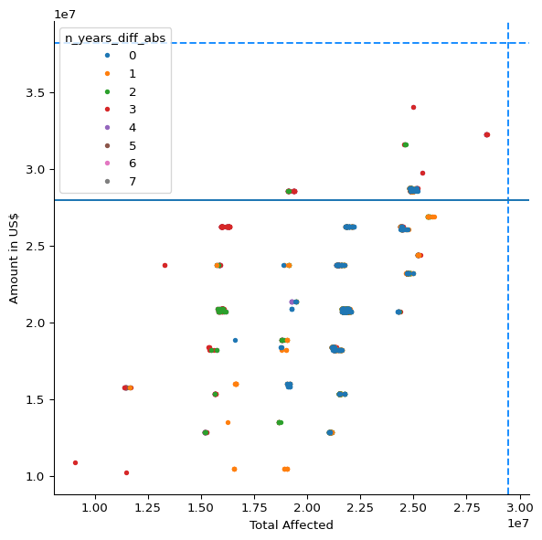
Combinations where the forecast and observational triggers fire in the same number of years:
df_metrics_balanced = df_metrics_lowest[
df_metrics_lowest["n_years_diff_abs"] == 0
]Of those, the ones capturing at least USD 28 million of CERF allocations:
df_metrics_balanced_high = df_metrics_balanced[
df_metrics_balanced["Amount in US$"] >= 2.8e7
]df_metrics_balanced_high| Total Affected | Total Deaths | Total Damage, Adjusted ('000 US$) | Amount in US$ | cerf | fcast_wind | fcast_rain_col | fcast_rain_thresh | obsv_wind | obsv_rain_col | obsv_rain_thresh | n_years_fcast | n_years_obsv | n_years_diff | n_years_diff_abs | n_years_total | |
|---|---|---|---|---|---|---|---|---|---|---|---|---|---|---|---|---|
| 71389 | 24843276.0 | 41.0 | 11268506.0 | 28547455.0 | 5.0 | 110.0 | q95 | 143.712340 | 105.0 | q50_obsv | 45.957497 | 5 | 5 | 0 | 0 | 10 |
| 119458 | 25087281.0 | 45.0 | 12817901.0 | 28547455.0 | 5.0 | 100.0 | q95 | 143.712340 | 105.0 | q50_obsv | 45.957497 | 5 | 5 | 0 | 0 | 10 |
| 119486 | 25187281.0 | 49.0 | 13866888.0 | 28547455.0 | 5.0 | 100.0 | q95 | 143.409800 | 105.0 | q50_obsv | 45.957497 | 5 | 5 | 0 | 0 | 10 |
| 71417 | 24943276.0 | 45.0 | 12317493.0 | 28547455.0 | 5.0 | 110.0 | q95 | 143.409800 | 105.0 | q50_obsv | 45.957497 | 5 | 5 | 0 | 0 | 10 |
| 60832 | 24865326.0 | 52.0 | 8098174.0 | 28717472.0 | 5.0 | 120.0 | q50 | 26.483074 | 75.0 | q50_obsv | 45.957497 | 6 | 6 | 0 | 0 | 12 |
| 60935 | 24815881.0 | 52.0 | 8098174.0 | 28717472.0 | 5.0 | 120.0 | q50 | 28.462177 | 75.0 | q50_obsv | 45.957497 | 6 | 6 | 0 | 0 | 12 |
| 191429 | 25154827.0 | 57.0 | 9647569.0 | 28717472.0 | 5.0 | 35.0 | q80 | 96.462585 | 105.0 | q80_obsv | 96.369003 | 5 | 5 | 0 | 0 | 10 |
| 98070 | 25109331.0 | 56.0 | 9647569.0 | 28717472.0 | 5.0 | 90.0 | q80 | 87.754250 | 105.0 | q80_obsv | 96.369003 | 5 | 5 | 0 | 0 | 10 |
| 313372 | 24865326.0 | 52.0 | 8098174.0 | 28717472.0 | 5.0 | 75.0 | q80 | 103.080360 | 105.0 | q80_obsv | 96.369003 | 5 | 5 | 0 | 0 | 10 |
| 191479 | 24910822.0 | 53.0 | 8098174.0 | 28717472.0 | 5.0 | 35.0 | q80 | 103.080360 | 105.0 | q80_obsv | 96.369003 | 5 | 5 | 0 | 0 | 10 |
| 312969 | 24865326.0 | 52.0 | 8098174.0 | 28717472.0 | 5.0 | 75.0 | mean | 59.768433 | 105.0 | q80_obsv | 96.369003 | 5 | 5 | 0 | 0 | 10 |
| 313322 | 25109331.0 | 56.0 | 9647569.0 | 28717472.0 | 5.0 | 75.0 | q80 | 96.462585 | 105.0 | q80_obsv | 96.369003 | 5 | 5 | 0 | 0 | 10 |
| 191184 | 24910822.0 | 53.0 | 8098174.0 | 28717472.0 | 5.0 | 35.0 | mean | 59.768433 | 105.0 | q80_obsv | 96.369003 | 5 | 5 | 0 | 0 | 10 |
Option 1 (combination 60832):
plot_selected_threshs(60832);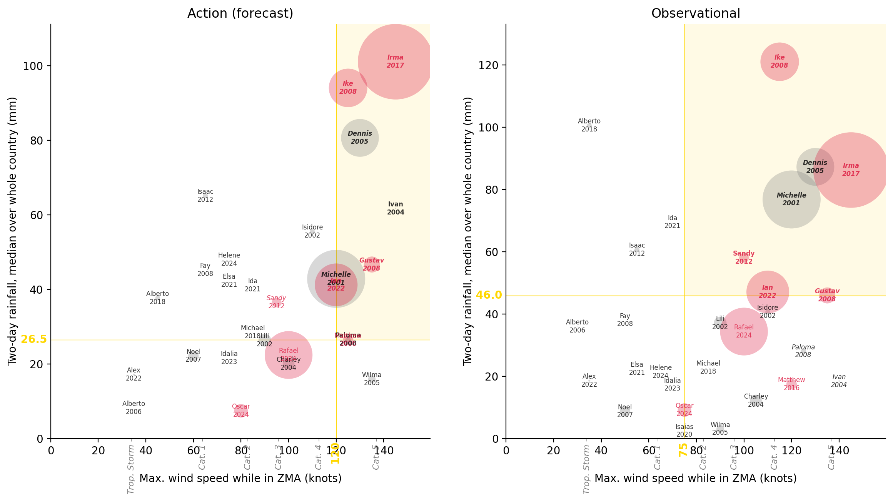
Option 2: the cluster with the most people affected.
The line at 27 million people marks that cluster.
fig, ax = plot_thresh_scatter(
"Total Affected", "Amount in US$", "n_years_diff_abs"
)
ax.axvline(2.7e7)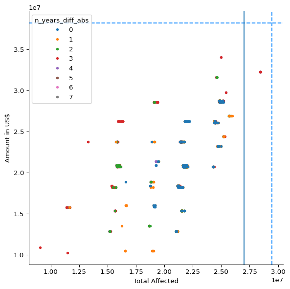
Combinations with at least 27 million people affected:
### Filter for High-Impact Trigger Combinations
df_metrics_high_impact = df_metrics_lowest[
df_metrics_lowest["Total Affected"] >= 2.7e7
]### Display High-Impact Combinations
df_metrics_high_impact| Total Affected | Total Deaths | Total Damage, Adjusted ('000 US$) | Amount in US$ | cerf | fcast_wind | fcast_rain_col | fcast_rain_thresh | obsv_wind | obsv_rain_col | obsv_rain_thresh | n_years_fcast | n_years_obsv | n_years_diff | n_years_diff_abs | n_years_total | |
|---|---|---|---|---|---|---|---|---|---|---|---|---|---|---|---|---|
| 201131 | 28412062.0 | 52.0 | 4971882.0 | 32229929.0 | 5.0 | 35.0 | mean | 71.266540 | 75.0 | q80_obsv | 96.369003 | 4 | 7 | -3 | 3 | 11 |
| 201388 | 28412062.0 | 52.0 | 4971882.0 | 32229929.0 | 5.0 | 35.0 | q80 | 128.088730 | 75.0 | q80_obsv | 96.369003 | 3 | 7 | -4 | 4 | 10 |
| 213486 | 28412062.0 | 52.0 | 4971882.0 | 32229929.0 | 5.0 | NaN | q80 | 35.698547 | 75.0 | q80_obsv | 96.369003 | 0 | 7 | -7 | 7 | 7 |
| 201218 | 28412062.0 | 52.0 | 4971882.0 | 32229929.0 | 5.0 | 35.0 | q50 | 80.616330 | 75.0 | q80_obsv | 96.369003 | 3 | 7 | -4 | 4 | 10 |
| 321926 | 28412062.0 | 52.0 | 4971882.0 | 32229929.0 | 5.0 | 75.0 | q50 | 65.069570 | 75.0 | q80_obsv | 96.369003 | 3 | 7 | -4 | 4 | 10 |
| 321743 | 28412062.0 | 52.0 | 4971882.0 | 32229929.0 | 5.0 | 75.0 | mean | 69.391884 | 75.0 | q80_obsv | 96.369003 | 4 | 7 | -3 | 3 | 11 |
| 201286 | 28457558.0 | 53.0 | 4971882.0 | 32229929.0 | 5.0 | 35.0 | q50 | 65.069570 | 75.0 | q80_obsv | 96.369003 | 4 | 7 | -3 | 3 | 11 |
| 213390 | 28412062.0 | 52.0 | 4971882.0 | 32229929.0 | 5.0 | NaN | q50 | 7.418959 | 75.0 | q80_obsv | 96.369003 | 0 | 7 | -7 | 7 | 7 |
| 214074 | 28412062.0 | 52.0 | 4971882.0 | 32229929.0 | 5.0 | NaN | q95 | 67.368840 | 75.0 | q80_obsv | 96.369003 | 0 | 7 | -7 | 7 | 7 |
| 213054 | 28412062.0 | 52.0 | 4971882.0 | 32229929.0 | 5.0 | NaN | mean | 21.936502 | 75.0 | q80_obsv | 96.369003 | 0 | 7 | -7 | 7 | 7 |
| 201114 | 28457558.0 | 53.0 | 4971882.0 | 32229929.0 | 5.0 | 35.0 | mean | 69.391884 | 75.0 | q80_obsv | 96.369003 | 4 | 7 | -3 | 3 | 11 |
| 170489 | 28412062.0 | 52.0 | 4971882.0 | 32229929.0 | 5.0 | 130.0 | q95 | 177.149400 | 75.0 | q80_obsv | 96.369003 | 1 | 7 | -6 | 6 | 8 |
| 201608 | 28412062.0 | 52.0 | 4971882.0 | 32229929.0 | 5.0 | 35.0 | q95 | 263.916200 | 75.0 | q80_obsv | 96.369003 | 1 | 7 | -6 | 6 | 8 |
Option 2 (combination 321743):
plot_selected_threshs(321743);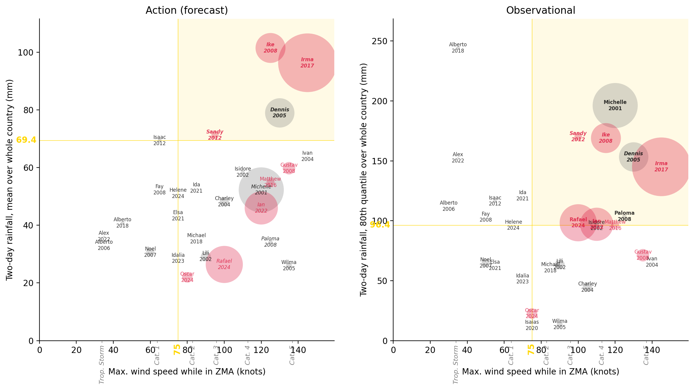
### Display Storm Details for High-Impact Combination
disp_selected_threshs(321743)| Action | Obsv. | CERF | Total Affected | |
|---|---|---|---|---|
| Storm | ||||
| Irma 2017 | Trig. | Trig. | Yes | 10,000,000 |
| Michelle 2001 | No trig. | Trig. | pre- | 5,900,012 |
| Rafael 2024 | No trig. | Trig. | Yes | 4,000,000 |
| Ian 2022 | No trig. | Trig. | Yes | 3,200,000 |
| Ike 2008 | Trig. | Trig. | Yes | 2,600,000 |
| Dennis 2005 | Trig. | Trig. | pre- | 2,500,000 |
| Gustav 2008 | No trig. | No trig. | Yes | 450,019 |
| Oscar 2024 | No trig. | No trig. | Yes | 320,000 |
| Lili 2002 | No trig. | No trig. | pre- | 281,470 |
| Charley 2004 | No trig. | No trig. | pre- | 244,005 |
| Noel 2007 | No trig. | No trig. | No | 192,488 |
| Matthew 2016 | No trig. | No trig. | Yes | 190,000 |
| Sandy 2012 | Trig. | Trig. | Yes | 162,605 |
| Wilma 2005 | No trig. | No trig. | pre- | 100,000 |
| Paloma 2008 | No trig. | Trig. | No | 49,445 |
| Isaac 2012 | No trig. | No trig. | No | 45,496 |
| Isidore 2002 | No trig. | No trig. | pre- | 42,500 |
| Alberto 2018 | No trig. | No trig. | No | 40,000 |
| Alex 2022 | No trig. | No trig. | No | 6,780 |
| Ivan 2004 | No trig. | No trig. | pre- | 3,245 |
| Michael 2018 | No trig. | No trig. | No | 540 |
| Isaias 2020 | No trig. | No trig. | No | 500 |
| Alberto 2006 | No trig. | No trig. | No | 268 |
| Ida 2021 | No trig. | No trig. | No | 0 |
| Elsa 2021 | No trig. | No trig. | No | 0 |
| Idalia 2023 | No trig. | No trig. | No | 0 |
| Helene 2024 | No trig. | No trig. | No | 0 |
| Dean 2007 | No trig. | No trig. | No | 0 |
| Fay 2008 | No trig. | No trig. | No | 0 |
Option 3: the cluster with the highest CERF amount.
The line at USD 33 million marks that cluster.
fig, ax = plot_thresh_scatter(
"Total Affected", "Amount in US$", "n_years_diff_abs"
)
ax.axhline(3.3e7)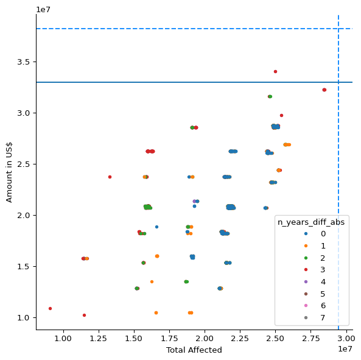
Combinations capturing at least USD 33 million:
### Filter for High-CERF Trigger Combinations
df_metrics_high_cerf = df_metrics_lowest[
df_metrics_lowest["Amount in US$"] >= 3.3e7
]### Display High-CERF Combinations
df_metrics_high_cerf| Total Affected | Total Deaths | Total Damage, Adjusted ('000 US$) | Amount in US$ | cerf | fcast_wind | fcast_rain_col | fcast_rain_thresh | obsv_wind | obsv_rain_col | obsv_rain_thresh | n_years_fcast | n_years_obsv | n_years_diff | n_years_diff_abs | n_years_total | |
|---|---|---|---|---|---|---|---|---|---|---|---|---|---|---|---|---|
| 201619 | 25002636.0 | 52.0 | 10958627.0 | 34070208.0 | 6.0 | 35.0 | q95 | 241.6073 | 75.0 | q50_obsv | 45.957497 | 2 | 6 | -4 | 4 | 8 |
| 91667 | 25002636.0 | 52.0 | 10958627.0 | 34070208.0 | 6.0 | 110.0 | q95 | 177.1494 | 75.0 | q50_obsv | 45.957497 | 3 | 6 | -3 | 3 | 9 |
Option 3 (combination 91667):
plot_selected_threshs(91667);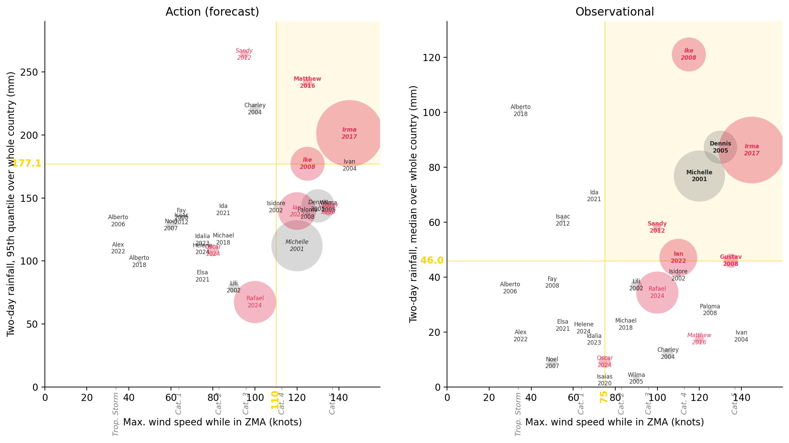
### Display Storm Details for High-CERF Combination
disp_selected_threshs(91667)| Action | Obsv. | CERF | Total Affected | |
|---|---|---|---|---|
| Storm | ||||
| Irma 2017 | Trig. | Trig. | Yes | 10,000,000 |
| Michelle 2001 | No trig. | Trig. | pre- | 5,900,012 |
| Rafael 2024 | No trig. | No trig. | Yes | 4,000,000 |
| Ian 2022 | No trig. | Trig. | Yes | 3,200,000 |
| Ike 2008 | Trig. | Trig. | Yes | 2,600,000 |
| Dennis 2005 | No trig. | Trig. | pre- | 2,500,000 |
| Gustav 2008 | No trig. | Trig. | Yes | 450,019 |
| Oscar 2024 | No trig. | No trig. | Yes | 320,000 |
| Lili 2002 | No trig. | No trig. | pre- | 281,470 |
| Charley 2004 | No trig. | No trig. | pre- | 244,005 |
| Noel 2007 | No trig. | No trig. | No | 192,488 |
| Matthew 2016 | Trig. | No trig. | Yes | 190,000 |
| Sandy 2012 | No trig. | Trig. | Yes | 162,605 |
| Wilma 2005 | No trig. | No trig. | pre- | 100,000 |
| Paloma 2008 | No trig. | No trig. | No | 49,445 |
| Isaac 2012 | No trig. | No trig. | No | 45,496 |
| Isidore 2002 | No trig. | No trig. | pre- | 42,500 |
| Alberto 2018 | No trig. | No trig. | No | 40,000 |
| Alex 2022 | No trig. | No trig. | No | 6,780 |
| Ivan 2004 | No trig. | No trig. | pre- | 3,245 |
| Michael 2018 | No trig. | No trig. | No | 540 |
| Isaias 2020 | No trig. | No trig. | No | 500 |
| Alberto 2006 | No trig. | No trig. | No | 268 |
| Ida 2021 | No trig. | No trig. | No | 0 |
| Elsa 2021 | No trig. | No trig. | No | 0 |
| Idalia 2023 | No trig. | No trig. | No | 0 |
| Helene 2024 | No trig. | No trig. | No | 0 |
| Dean 2007 | No trig. | No trig. | No | 0 |
| Fay 2008 | No trig. | No trig. | No | 0 |
A small cluster where the forecast trigger fires two years more or fewer than the observational one. Nothing stood out, so it was not presented to the working group.
### Analyze Two-Year Difference Combinations
fig, ax = plot_thresh_scatter(
"Total Affected", "Amount in US$", "n_years_diff_abs"
)
ax.axhline(3.0e7)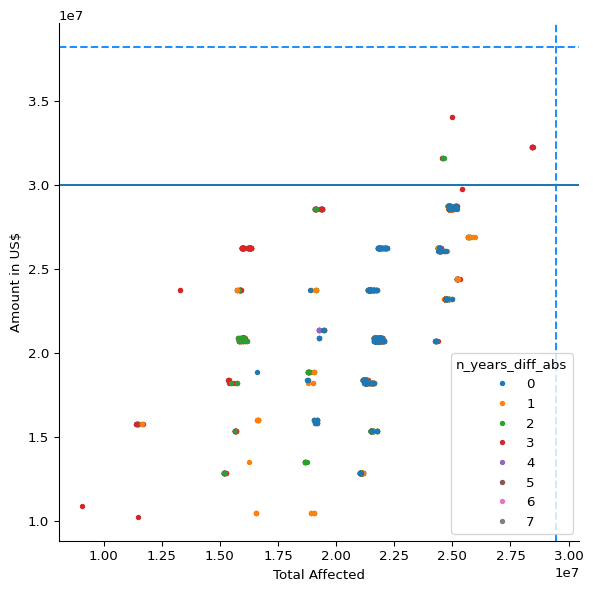
### Filter for Two-Year Difference Combinations
df_twoyears = df_metrics_lowest[
(df_metrics_lowest["n_years_diff_abs"] == 2)
& (df_metrics_lowest["Amount in US$"] >= 3.0e7)
]df_twoyears| Total Affected | Total Deaths | Total Damage, Adjusted ('000 US$) | Amount in US$ | cerf | fcast_wind | fcast_rain_col | fcast_rain_thresh | obsv_wind | obsv_rain_col | obsv_rain_thresh | n_years_fcast | n_years_obsv | n_years_diff | n_years_diff_abs | n_years_total | |
|---|---|---|---|---|---|---|---|---|---|---|---|---|---|---|---|---|
| 312998 | 24602062.0 | 52.0 | 8142214.0 | 31582777.0 | 5.0 | 75.0 | mean | 69.391884 | 105.0 | q80_obsv | 96.217003 | 4 | 6 | -2 | 2 | 10 |
| 191213 | 24647558.0 | 53.0 | 8142214.0 | 31582777.0 | 5.0 | 35.0 | mean | 69.391884 | 105.0 | q80_obsv | 96.217003 | 4 | 6 | -2 | 2 | 10 |
| 191235 | 24602062.0 | 52.0 | 8142214.0 | 31582777.0 | 5.0 | 35.0 | mean | 71.266540 | 105.0 | q80_obsv | 96.217003 | 4 | 6 | -2 | 2 | 10 |
plot_selected_threshs(312998);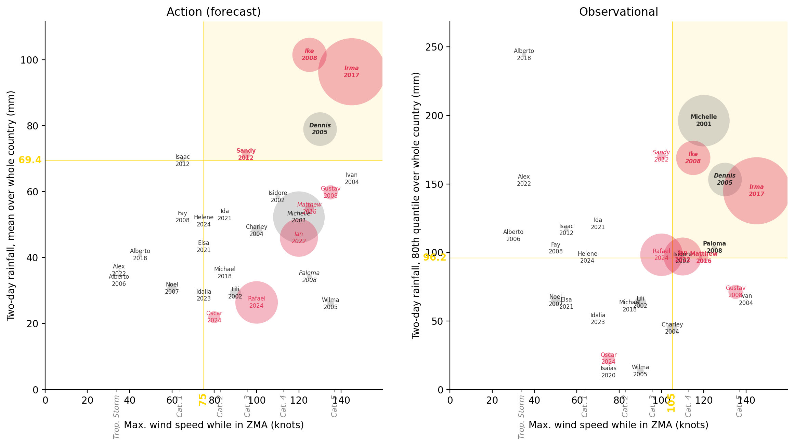
disp_selected_threshs(312998)| Action | Obsv. | CERF | Total Affected | |
|---|---|---|---|---|
| Storm | ||||
| Irma 2017 | Trig. | Trig. | Yes | 10,000,000 |
| Michelle 2001 | No trig. | Trig. | pre- | 5,900,012 |
| Rafael 2024 | No trig. | No trig. | Yes | 4,000,000 |
| Ian 2022 | No trig. | Trig. | Yes | 3,200,000 |
| Ike 2008 | Trig. | Trig. | Yes | 2,600,000 |
| Dennis 2005 | Trig. | Trig. | pre- | 2,500,000 |
| Gustav 2008 | No trig. | No trig. | Yes | 450,019 |
| Oscar 2024 | No trig. | No trig. | Yes | 320,000 |
| Lili 2002 | No trig. | No trig. | pre- | 281,470 |
| Charley 2004 | No trig. | No trig. | pre- | 244,005 |
| Noel 2007 | No trig. | No trig. | No | 192,488 |
| Matthew 2016 | No trig. | Trig. | Yes | 190,000 |
| Sandy 2012 | Trig. | No trig. | Yes | 162,605 |
| Wilma 2005 | No trig. | No trig. | pre- | 100,000 |
| Paloma 2008 | No trig. | Trig. | No | 49,445 |
| Isaac 2012 | No trig. | No trig. | No | 45,496 |
| Isidore 2002 | No trig. | No trig. | pre- | 42,500 |
| Alberto 2018 | No trig. | No trig. | No | 40,000 |
| Alex 2022 | No trig. | No trig. | No | 6,780 |
| Ivan 2004 | No trig. | No trig. | pre- | 3,245 |
| Michael 2018 | No trig. | No trig. | No | 540 |
| Isaias 2020 | No trig. | No trig. | No | 500 |
| Alberto 2006 | No trig. | No trig. | No | 268 |
| Ida 2021 | No trig. | No trig. | No | 0 |
| Elsa 2021 | No trig. | No trig. | No | 0 |
| Idalia 2023 | No trig. | No trig. | No | 0 |
| Helene 2024 | No trig. | No trig. | No | 0 |
| Dean 2007 | No trig. | No trig. | No | 0 |
| Fay 2008 | No trig. | No trig. | No | 0 |
Option 4: a small cluster with the second-highest number of people affected, where the two triggers differ by one year.
fig, ax = plot_thresh_scatter(
"Total Affected", "Amount in US$", "n_years_diff_abs"
)
ax.axvline(2.55e7)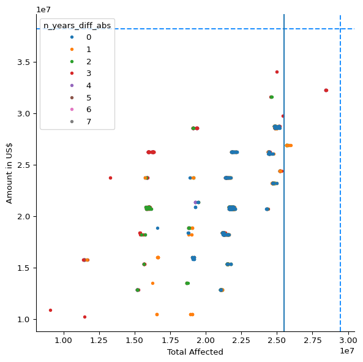
df_oneyear = df_metrics_lowest[
(df_metrics_lowest["Total Affected"] >= 2.55e7)
& (df_metrics_lowest["n_years_diff_abs"] == 1)
]df_oneyear| Total Affected | Total Deaths | Total Damage, Adjusted ('000 US$) | Amount in US$ | cerf | fcast_wind | fcast_rain_col | fcast_rain_thresh | obsv_wind | obsv_rain_col | obsv_rain_thresh | n_years_fcast | n_years_obsv | n_years_diff | n_years_diff_abs | n_years_total | |
|---|---|---|---|---|---|---|---|---|---|---|---|---|---|---|---|---|
| 201091 | 25710822.0 | 50.0 | 8073174.0 | 26889626.0 | 5.0 | 35.0 | mean | 59.768433 | 75.0 | q80_obsv | 98.341003 | 5 | 6 | -1 | 1 | 11 |
| 201377 | 25710822.0 | 50.0 | 8073174.0 | 26889626.0 | 5.0 | 35.0 | q80 | 103.080360 | 75.0 | q80_obsv | 98.341003 | 5 | 6 | -1 | 1 | 11 |
| 111447 | 25909331.0 | 53.0 | 9622569.0 | 26889626.0 | 5.0 | 90.0 | q80 | 87.754250 | 75.0 | q80_obsv | 98.341003 | 5 | 6 | -1 | 1 | 11 |
| 60958 | 25665326.0 | 49.0 | 8073174.0 | 26889626.0 | 5.0 | 120.0 | q50 | 42.302090 | 75.0 | q80_obsv | 98.341003 | 5 | 6 | -1 | 1 | 11 |
| 322018 | 25665326.0 | 49.0 | 8073174.0 | 26889626.0 | 5.0 | 75.0 | q80 | 103.080360 | 75.0 | q80_obsv | 98.341003 | 5 | 6 | -1 | 1 | 11 |
| 321720 | 25665326.0 | 49.0 | 8073174.0 | 26889626.0 | 5.0 | 75.0 | mean | 59.768433 | 75.0 | q80_obsv | 98.341003 | 5 | 6 | -1 | 1 | 11 |
| 201331 | 25954827.0 | 54.0 | 9622569.0 | 26889626.0 | 5.0 | 35.0 | q80 | 96.462585 | 75.0 | q80_obsv | 98.341003 | 5 | 6 | -1 | 1 | 11 |
| 321972 | 25909331.0 | 53.0 | 9622569.0 | 26889626.0 | 5.0 | 75.0 | q80 | 96.462585 | 75.0 | q80_obsv | 98.341003 | 5 | 6 | -1 | 1 | 11 |
plot_selected_threshs(321972);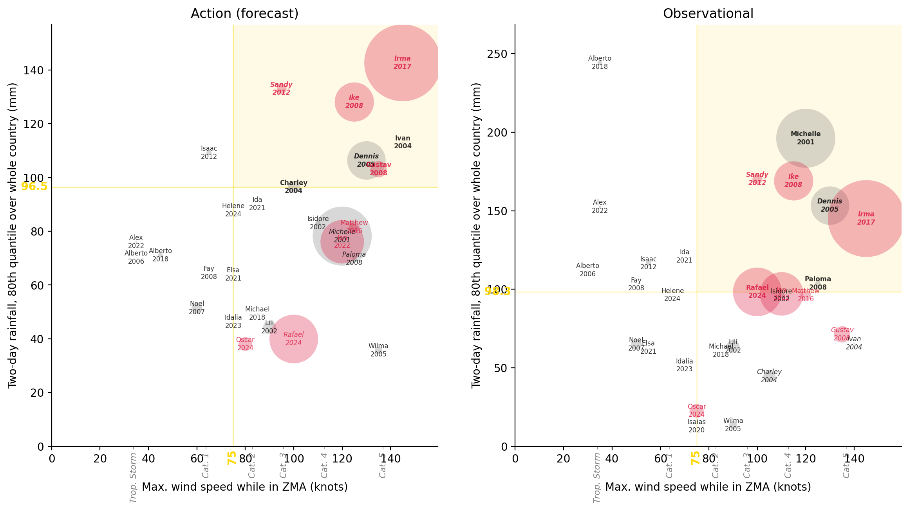
disp_selected_threshs(321972)| Action | Obsv. | CERF | Total Affected | |
|---|---|---|---|---|
| Storm | ||||
| Irma 2017 | Trig. | Trig. | Yes | 10,000,000 |
| Michelle 2001 | No trig. | Trig. | pre- | 5,900,012 |
| Rafael 2024 | No trig. | Trig. | Yes | 4,000,000 |
| Ian 2022 | No trig. | No trig. | Yes | 3,200,000 |
| Ike 2008 | Trig. | Trig. | Yes | 2,600,000 |
| Dennis 2005 | Trig. | Trig. | pre- | 2,500,000 |
| Gustav 2008 | Trig. | No trig. | Yes | 450,019 |
| Oscar 2024 | No trig. | No trig. | Yes | 320,000 |
| Lili 2002 | No trig. | No trig. | pre- | 281,470 |
| Charley 2004 | Trig. | No trig. | pre- | 244,005 |
| Noel 2007 | No trig. | No trig. | No | 192,488 |
| Matthew 2016 | No trig. | No trig. | Yes | 190,000 |
| Sandy 2012 | Trig. | Trig. | Yes | 162,605 |
| Wilma 2005 | No trig. | No trig. | pre- | 100,000 |
| Paloma 2008 | No trig. | Trig. | No | 49,445 |
| Isaac 2012 | No trig. | No trig. | No | 45,496 |
| Isidore 2002 | No trig. | No trig. | pre- | 42,500 |
| Alberto 2018 | No trig. | No trig. | No | 40,000 |
| Alex 2022 | No trig. | No trig. | No | 6,780 |
| Ivan 2004 | Trig. | No trig. | pre- | 3,245 |
| Michael 2018 | No trig. | No trig. | No | 540 |
| Isaias 2020 | No trig. | No trig. | No | 500 |
| Alberto 2006 | No trig. | No trig. | No | 268 |
| Ida 2021 | No trig. | No trig. | No | 0 |
| Elsa 2021 | No trig. | No trig. | No | 0 |
| Idalia 2023 | No trig. | No trig. | No | 0 |
| Helene 2024 | No trig. | No trig. | No | 0 |
| Dean 2007 | No trig. | No trig. | No | 0 |
| Fay 2008 | No trig. | No trig. | No | 0 |
How far the trigger can lean towards the forecast. The results are variants of option 1.
fig, ax = plot_thresh_scatter(
"Total Affected",
"Amount in US$",
"n_years_diff",
fcast_pref_only=True,
zorder_rev=False,
)
ax.axhline(2.7e7)
ax.axvline(2.3e7)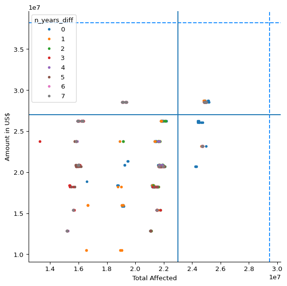
df_fcast_pref = df_metrics_lowest[
(df_metrics_lowest["Total Affected"] >= 2.3e7)
& (df_metrics_lowest["Amount in US$"] >= 2.7e7)
& (df_metrics_lowest["n_years_diff"] >= 0)
]df_fcast_pref| Total Affected | Total Deaths | Total Damage, Adjusted ('000 US$) | Amount in US$ | cerf | fcast_wind | fcast_rain_col | fcast_rain_thresh | obsv_wind | obsv_rain_col | obsv_rain_thresh | n_years_fcast | n_years_obsv | n_years_diff | n_years_diff_abs | n_years_total | |
|---|---|---|---|---|---|---|---|---|---|---|---|---|---|---|---|---|
| 22746 | 24843276.0 | 41.0 | 11268506.0 | 28547455.0 | 5.0 | 120.0 | q80 | 70.166730 | 130.0 | q50_obsv | 2.44 | 7 | 4 | 3 | 3 | 11 |
| 38993 | 24992721.0 | 45.0 | 12317493.0 | 28547455.0 | 5.0 | 120.0 | mean | 21.936502 | 115.0 | q50_obsv | 2.44 | 7 | 6 | 1 | 1 | 13 |
| 44003 | 24992721.0 | 45.0 | 12317493.0 | 28547455.0 | 5.0 | 120.0 | q95 | 67.368840 | 115.0 | q50_obsv | 2.44 | 7 | 6 | 1 | 1 | 13 |
| 39109 | 24892721.0 | 41.0 | 11268506.0 | 28547455.0 | 5.0 | 120.0 | mean | 26.405380 | 115.0 | q50_obsv | 2.44 | 7 | 6 | 1 | 1 | 13 |
| 42119 | 24892721.0 | 41.0 | 11268506.0 | 28547455.0 | 5.0 | 120.0 | q80 | 38.042336 | 115.0 | q50_obsv | 2.44 | 7 | 6 | 1 | 1 | 13 |
| ... | ... | ... | ... | ... | ... | ... | ... | ... | ... | ... | ... | ... | ... | ... | ... | ... |
| 25792 | 24992721.0 | 45.0 | 12317493.0 | 28547455.0 | 5.0 | 120.0 | q95 | 67.368840 | 30.0 | q95_obsv | NaN | 7 | 0 | 7 | 7 | 7 |
| 25421 | 24992721.0 | 45.0 | 12317493.0 | 28547455.0 | 5.0 | 120.0 | q50 | 7.418959 | 30.0 | q80_obsv | NaN | 7 | 0 | 7 | 7 | 7 |
| 25422 | 24992721.0 | 45.0 | 12317493.0 | 28547455.0 | 5.0 | 120.0 | q50 | 7.418959 | 30.0 | q95_obsv | NaN | 7 | 0 | 7 | 7 | 7 |
| 25202 | 24992721.0 | 45.0 | 12317493.0 | 28547455.0 | 5.0 | 120.0 | mean | 21.936502 | 30.0 | q80_obsv | NaN | 7 | 0 | 7 | 7 | 7 |
| 25203 | 24992721.0 | 45.0 | 12317493.0 | 28547455.0 | 5.0 | 120.0 | mean | 21.936502 | 30.0 | q95_obsv | NaN | 7 | 0 | 7 | 7 | 7 |
160 rows × 16 columns
df_fcast_only = df_fcast_pref[df_fcast_pref["n_years_diff"] == 0]df_fcast_only| Total Affected | Total Deaths | Total Damage, Adjusted ('000 US$) | Amount in US$ | cerf | fcast_wind | fcast_rain_col | fcast_rain_thresh | obsv_wind | obsv_rain_col | obsv_rain_thresh | n_years_fcast | n_years_obsv | n_years_diff | n_years_diff_abs | n_years_total | |
|---|---|---|---|---|---|---|---|---|---|---|---|---|---|---|---|---|
| 71389 | 24843276.0 | 41.0 | 11268506.0 | 28547455.0 | 5.0 | 110.0 | q95 | 143.712340 | 105.0 | q50_obsv | 45.957497 | 5 | 5 | 0 | 0 | 10 |
| 119458 | 25087281.0 | 45.0 | 12817901.0 | 28547455.0 | 5.0 | 100.0 | q95 | 143.712340 | 105.0 | q50_obsv | 45.957497 | 5 | 5 | 0 | 0 | 10 |
| 119486 | 25187281.0 | 49.0 | 13866888.0 | 28547455.0 | 5.0 | 100.0 | q95 | 143.409800 | 105.0 | q50_obsv | 45.957497 | 5 | 5 | 0 | 0 | 10 |
| 71417 | 24943276.0 | 45.0 | 12317493.0 | 28547455.0 | 5.0 | 110.0 | q95 | 143.409800 | 105.0 | q50_obsv | 45.957497 | 5 | 5 | 0 | 0 | 10 |
| 60832 | 24865326.0 | 52.0 | 8098174.0 | 28717472.0 | 5.0 | 120.0 | q50 | 26.483074 | 75.0 | q50_obsv | 45.957497 | 6 | 6 | 0 | 0 | 12 |
| 60935 | 24815881.0 | 52.0 | 8098174.0 | 28717472.0 | 5.0 | 120.0 | q50 | 28.462177 | 75.0 | q50_obsv | 45.957497 | 6 | 6 | 0 | 0 | 12 |
| 191429 | 25154827.0 | 57.0 | 9647569.0 | 28717472.0 | 5.0 | 35.0 | q80 | 96.462585 | 105.0 | q80_obsv | 96.369003 | 5 | 5 | 0 | 0 | 10 |
| 98070 | 25109331.0 | 56.0 | 9647569.0 | 28717472.0 | 5.0 | 90.0 | q80 | 87.754250 | 105.0 | q80_obsv | 96.369003 | 5 | 5 | 0 | 0 | 10 |
| 313372 | 24865326.0 | 52.0 | 8098174.0 | 28717472.0 | 5.0 | 75.0 | q80 | 103.080360 | 105.0 | q80_obsv | 96.369003 | 5 | 5 | 0 | 0 | 10 |
| 191479 | 24910822.0 | 53.0 | 8098174.0 | 28717472.0 | 5.0 | 35.0 | q80 | 103.080360 | 105.0 | q80_obsv | 96.369003 | 5 | 5 | 0 | 0 | 10 |
| 312969 | 24865326.0 | 52.0 | 8098174.0 | 28717472.0 | 5.0 | 75.0 | mean | 59.768433 | 105.0 | q80_obsv | 96.369003 | 5 | 5 | 0 | 0 | 10 |
| 313322 | 25109331.0 | 56.0 | 9647569.0 | 28717472.0 | 5.0 | 75.0 | q80 | 96.462585 | 105.0 | q80_obsv | 96.369003 | 5 | 5 | 0 | 0 | 10 |
| 191184 | 24910822.0 | 53.0 | 8098174.0 | 28717472.0 | 5.0 | 35.0 | mean | 59.768433 | 105.0 | q80_obsv | 96.369003 | 5 | 5 | 0 | 0 | 10 |
plot_selected_threshs(25477) # not sure if worth leaving in book.;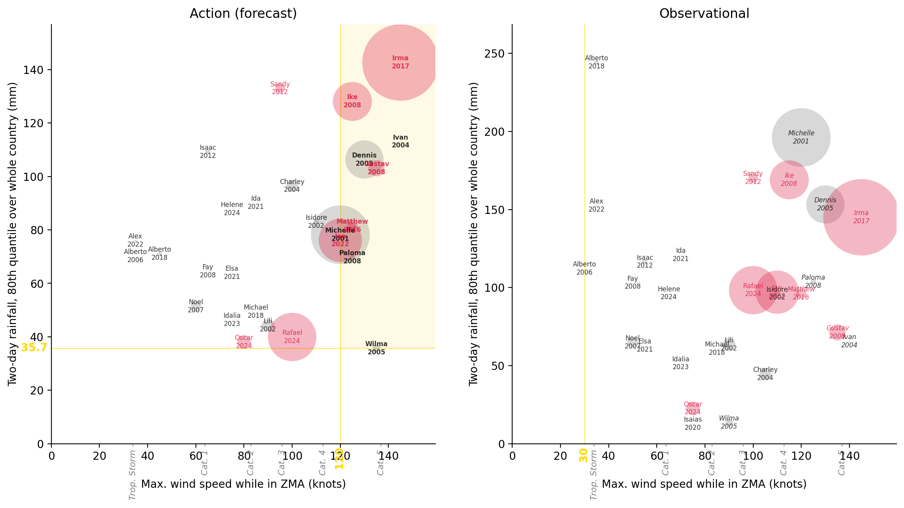
Only combinations where the forecast and observational triggers use the same rainfall aggregation and the same wind speed threshold.
df_simplified = df_metrics_lowest[
(
df_metrics_lowest["fcast_rain_col"]
== df_metrics_lowest["obsv_rain_col"].str.removesuffix("_obsv")
)
& (df_metrics_lowest["fcast_wind"] == df_metrics_lowest["obsv_wind"])
]df_metrics_lowest[
(df_metrics_lowest["fcast_wind"] == df_metrics_lowest["obsv_wind"])
].sort_values("Total Affected", ascending=False)| Total Affected | Total Deaths | Total Damage, Adjusted ('000 US$) | Amount in US$ | cerf | fcast_wind | fcast_rain_col | fcast_rain_thresh | obsv_wind | obsv_rain_col | obsv_rain_thresh | n_years_fcast | n_years_obsv | n_years_diff | n_years_diff_abs | n_years_total | |
|---|---|---|---|---|---|---|---|---|---|---|---|---|---|---|---|---|
| 321743 | 28412062.0 | 52.0 | 4971882.0 | 32229929.0 | 5.0 | 75.0 | mean | 69.391884 | 75.0 | q80_obsv | 96.369003 | 4 | 7 | -3 | 3 | 11 |
| 321926 | 28412062.0 | 52.0 | 4971882.0 | 32229929.0 | 5.0 | 75.0 | q50 | 65.069570 | 75.0 | q80_obsv | 96.369003 | 3 | 7 | -4 | 4 | 10 |
| 321972 | 25909331.0 | 53.0 | 9622569.0 | 26889626.0 | 5.0 | 75.0 | q80 | 96.462585 | 75.0 | q80_obsv | 98.341003 | 5 | 6 | -1 | 1 | 11 |
| 322018 | 25665326.0 | 49.0 | 8073174.0 | 26889626.0 | 5.0 | 75.0 | q80 | 103.080360 | 75.0 | q80_obsv | 98.341003 | 5 | 6 | -1 | 1 | 11 |
| 321720 | 25665326.0 | 49.0 | 8073174.0 | 26889626.0 | 5.0 | 75.0 | mean | 59.768433 | 75.0 | q80_obsv | 98.341003 | 5 | 6 | -1 | 1 | 11 |
| 321846 | 25215307.0 | 49.0 | 5256761.0 | 24402195.0 | 4.0 | 75.0 | q50 | 61.708008 | 75.0 | q80_obsv | 98.341003 | 4 | 6 | -2 | 2 | 10 |
| 321994 | 25215307.0 | 49.0 | 5256761.0 | 24402195.0 | 4.0 | 75.0 | q80 | 106.357285 | 75.0 | q80_obsv | 98.341003 | 5 | 6 | -1 | 1 | 11 |
| 321679 | 25215307.0 | 49.0 | 5256761.0 | 24402195.0 | 4.0 | 75.0 | mean | 63.864970 | 75.0 | q80_obsv | 98.341003 | 5 | 6 | -1 | 1 | 11 |
| 321923 | 25136606.0 | 55.0 | 7863137.0 | 28717472.0 | 5.0 | 75.0 | q50 | 65.069570 | 75.0 | q50_obsv | 35.949997 | 3 | 7 | -4 | 4 | 10 |
| 321740 | 25136606.0 | 55.0 | 7863137.0 | 28717472.0 | 5.0 | 75.0 | mean | 69.391884 | 75.0 | q50_obsv | 35.949997 | 4 | 7 | -3 | 3 | 11 |
| 321970 | 25059886.0 | 56.0 | 9647569.0 | 28717472.0 | 5.0 | 75.0 | q80 | 96.462585 | 75.0 | q50_obsv | 45.957497 | 5 | 6 | -1 | 1 | 11 |
| 321924 | 24855136.0 | 52.0 | 7825716.0 | 28717472.0 | 5.0 | 75.0 | q50 | 65.069570 | 75.0 | q50_obsv | 38.012497 | 3 | 7 | -4 | 4 | 10 |
| 321741 | 24855136.0 | 52.0 | 7825716.0 | 28717472.0 | 5.0 | 75.0 | mean | 69.391884 | 75.0 | q50_obsv | 38.012497 | 4 | 7 | -3 | 3 | 11 |
| 321718 | 24815881.0 | 52.0 | 8098174.0 | 28717472.0 | 5.0 | 75.0 | mean | 59.768433 | 75.0 | q50_obsv | 45.957497 | 5 | 6 | -1 | 1 | 11 |
| 321844 | 24815881.0 | 52.0 | 8098174.0 | 28717472.0 | 5.0 | 75.0 | q50 | 61.708008 | 75.0 | q50_obsv | 45.957497 | 4 | 6 | -2 | 2 | 10 |
| 322016 | 24815881.0 | 52.0 | 8098174.0 | 28717472.0 | 5.0 | 75.0 | q80 | 103.080360 | 75.0 | q50_obsv | 45.957497 | 5 | 6 | -1 | 1 | 11 |
| 321920 | 24454562.0 | 52.0 | 5009303.0 | 26230041.0 | 4.0 | 75.0 | q50 | 65.069570 | 75.0 | mean_obsv | 51.583454 | 3 | 7 | -4 | 4 | 10 |
| 321737 | 24454562.0 | 52.0 | 5009303.0 | 26230041.0 | 4.0 | 75.0 | mean | 69.391884 | 75.0 | mean_obsv | 51.583454 | 4 | 7 | -3 | 3 | 11 |
| 321678 | 24365862.0 | 52.0 | 5281761.0 | 26230041.0 | 4.0 | 75.0 | mean | 63.864970 | 75.0 | q50_obsv | 47.079998 | 5 | 6 | -1 | 1 | 11 |
| 321845 | 24365862.0 | 52.0 | 5281761.0 | 26230041.0 | 4.0 | 75.0 | q50 | 61.708008 | 75.0 | q50_obsv | 47.079998 | 4 | 6 | -2 | 2 | 10 |
| 321993 | 24365862.0 | 52.0 | 5281761.0 | 26230041.0 | 4.0 | 75.0 | q80 | 106.357285 | 75.0 | q50_obsv | 47.079998 | 5 | 6 | -1 | 1 | 11 |
| 321965 | 21951831.0 | 53.0 | 9659990.0 | 20889738.0 | 4.0 | 75.0 | q80 | 96.462585 | 75.0 | mean_obsv | 55.230145 | 5 | 6 | -1 | 1 | 11 |
| 321967 | 21902386.0 | 53.0 | 9659990.0 | 20889738.0 | 4.0 | 75.0 | q80 | 96.462585 | 75.0 | mean_obsv | 74.488056 | 5 | 6 | -1 | 1 | 11 |
| 321644 | 21707826.0 | 49.0 | 8110595.0 | 20889738.0 | 4.0 | 75.0 | mean | 58.365227 | 75.0 | mean_obsv | 55.230145 | 6 | 6 | 0 | 0 | 12 |
| 322011 | 21707826.0 | 49.0 | 8110595.0 | 20889738.0 | 4.0 | 75.0 | q80 | 103.080360 | 75.0 | mean_obsv | 55.230145 | 5 | 6 | -1 | 1 | 11 |
| 321660 | 21707826.0 | 49.0 | 8110595.0 | 20889738.0 | 4.0 | 75.0 | mean | 58.365227 | 75.0 | q80_obsv | 103.079987 | 6 | 5 | 1 | 1 | 11 |
| 321655 | 21658381.0 | 49.0 | 8110595.0 | 20889738.0 | 4.0 | 75.0 | mean | 58.365227 | 75.0 | q50_obsv | 58.065002 | 6 | 5 | 1 | 1 | 11 |
| 321647 | 21658381.0 | 49.0 | 8110595.0 | 20889738.0 | 4.0 | 75.0 | mean | 58.365227 | 75.0 | mean_obsv | 74.488056 | 6 | 6 | 0 | 0 | 12 |
| 322013 | 21658381.0 | 49.0 | 8110595.0 | 20889738.0 | 4.0 | 75.0 | q80 | 103.080360 | 75.0 | mean_obsv | 74.488056 | 5 | 6 | -1 | 1 | 11 |
| 321659 | 21658381.0 | 49.0 | 8110595.0 | 20889738.0 | 4.0 | 75.0 | mean | 58.365227 | 75.0 | q80_obsv | 112.148994 | 6 | 5 | 1 | 1 | 11 |
| 321810 | 21495776.0 | 38.0 | 8110595.0 | 15366985.0 | 3.0 | 75.0 | q50 | 42.807594 | 75.0 | q50_obsv | 60.637505 | 7 | 4 | 3 | 3 | 11 |
| 321747 | 21444562.0 | 49.0 | 8154635.0 | 23755043.0 | 4.0 | 75.0 | mean | 69.391884 | 75.0 | q95_obsv | 186.113480 | 4 | 7 | -3 | 3 | 11 |
| 321930 | 21444562.0 | 49.0 | 8154635.0 | 23755043.0 | 4.0 | 75.0 | q50 | 65.069570 | 75.0 | q95_obsv | 186.113480 | 3 | 7 | -4 | 4 | 10 |
| 321672 | 21257807.0 | 49.0 | 5294182.0 | 18402307.0 | 3.0 | 75.0 | mean | 63.864970 | 75.0 | mean_obsv | 55.230145 | 5 | 6 | -1 | 1 | 11 |
| 321829 | 21257807.0 | 49.0 | 5294182.0 | 18402307.0 | 3.0 | 75.0 | q50 | 55.458720 | 75.0 | q80_obsv | 103.079987 | 5 | 5 | 0 | 0 | 10 |
| 321821 | 21257807.0 | 49.0 | 5294182.0 | 18402307.0 | 3.0 | 75.0 | q50 | 55.458720 | 75.0 | mean_obsv | 55.230145 | 5 | 6 | -1 | 1 | 11 |
| 321987 | 21257807.0 | 49.0 | 5294182.0 | 18402307.0 | 3.0 | 75.0 | q80 | 106.357285 | 75.0 | mean_obsv | 55.230145 | 5 | 6 | -1 | 1 | 11 |
| 321674 | 21208362.0 | 49.0 | 5294182.0 | 18402307.0 | 3.0 | 75.0 | mean | 63.864970 | 75.0 | mean_obsv | 74.488056 | 5 | 6 | -1 | 1 | 11 |
| 321989 | 21208362.0 | 49.0 | 5294182.0 | 18402307.0 | 3.0 | 75.0 | q80 | 106.357285 | 75.0 | mean_obsv | 74.488056 | 5 | 6 | -1 | 1 | 11 |
| 321823 | 21208362.0 | 49.0 | 5294182.0 | 18402307.0 | 3.0 | 75.0 | q50 | 55.458720 | 75.0 | mean_obsv | 74.488056 | 5 | 6 | -1 | 1 | 11 |
| 321826 | 21208362.0 | 49.0 | 5294182.0 | 18402307.0 | 3.0 | 75.0 | q50 | 55.458720 | 75.0 | q50_obsv | 58.065002 | 5 | 5 | 0 | 0 | 10 |
| 321828 | 21208362.0 | 49.0 | 5294182.0 | 18402307.0 | 3.0 | 75.0 | q50 | 55.458720 | 75.0 | q80_obsv | 112.148994 | 5 | 5 | 0 | 0 | 10 |
| 321960 | 21045757.0 | 38.0 | 5294182.0 | 12879554.0 | 2.0 | 75.0 | q50 | 47.932934 | 75.0 | q50_obsv | 60.637505 | 6 | 4 | 2 | 2 | 10 |
plot_thresh_scatter(
"Total Affected",
"Amount in US$",
color="n_years_diff_abs",
zero_intercept=True,
);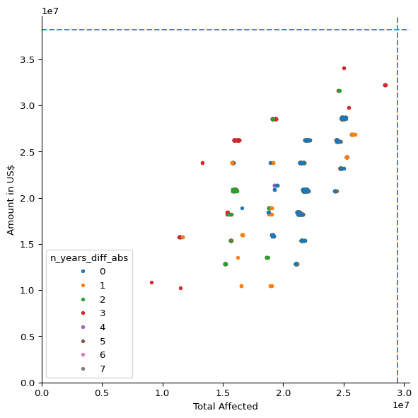
plot_thresh_scatter(
"Total Affected",
"Amount in US$",
color="n_years_diff_abs",
same_wind=True,
zero_intercept=True,
);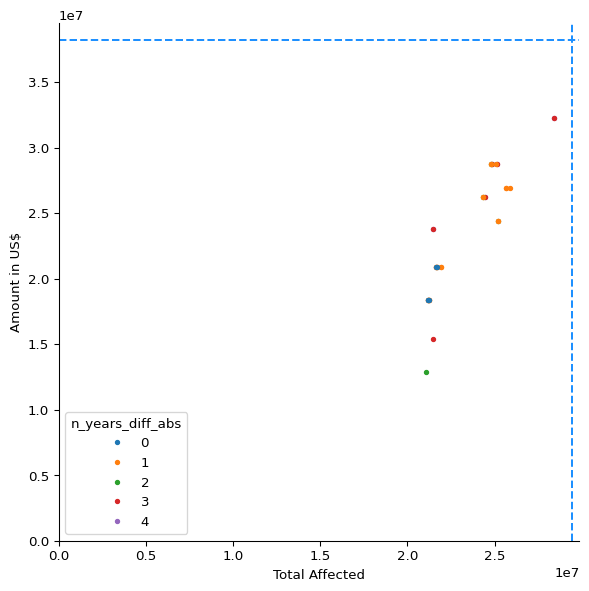
plot_thresh_scatter(
"Total Affected",
"Amount in US$",
color="n_years_diff_abs",
same_rain_col=True,
zero_intercept=True,
);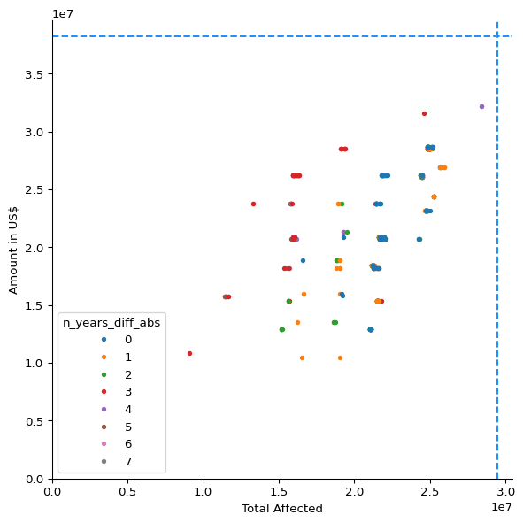
plot_thresh_scatter(
"Total Affected",
"Amount in US$",
color="n_years_diff_abs",
same_rain_col=True,
same_wind=True,
zero_intercept=True,
);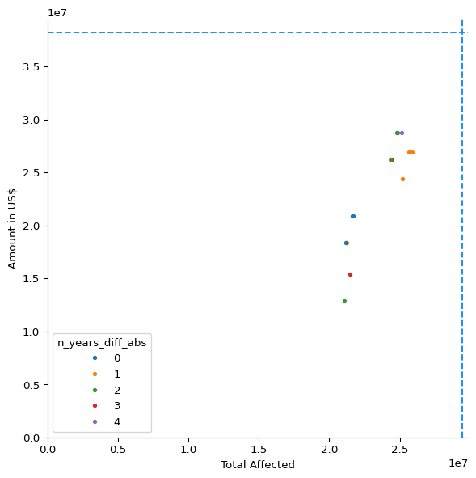
df_simplified.sort_values(
["Amount in US$", "Total Affected"],
ascending=False,
)| Total Affected | Total Deaths | Total Damage, Adjusted ('000 US$) | Amount in US$ | cerf | fcast_wind | fcast_rain_col | fcast_rain_thresh | obsv_wind | obsv_rain_col | obsv_rain_thresh | n_years_fcast | n_years_obsv | n_years_diff | n_years_diff_abs | n_years_total | |
|---|---|---|---|---|---|---|---|---|---|---|---|---|---|---|---|---|
| 321923 | 25136606.0 | 55.0 | 7863137.0 | 28717472.0 | 5.0 | 75.0 | q50 | 65.069570 | 75.0 | q50_obsv | 35.949997 | 3 | 7 | -4 | 4 | 10 |
| 321924 | 24855136.0 | 52.0 | 7825716.0 | 28717472.0 | 5.0 | 75.0 | q50 | 65.069570 | 75.0 | q50_obsv | 38.012497 | 3 | 7 | -4 | 4 | 10 |
| 321844 | 24815881.0 | 52.0 | 8098174.0 | 28717472.0 | 5.0 | 75.0 | q50 | 61.708008 | 75.0 | q50_obsv | 45.957497 | 4 | 6 | -2 | 2 | 10 |
| 321972 | 25909331.0 | 53.0 | 9622569.0 | 26889626.0 | 5.0 | 75.0 | q80 | 96.462585 | 75.0 | q80_obsv | 98.341003 | 5 | 6 | -1 | 1 | 11 |
| 322018 | 25665326.0 | 49.0 | 8073174.0 | 26889626.0 | 5.0 | 75.0 | q80 | 103.080360 | 75.0 | q80_obsv | 98.341003 | 5 | 6 | -1 | 1 | 11 |
| 321737 | 24454562.0 | 52.0 | 5009303.0 | 26230041.0 | 4.0 | 75.0 | mean | 69.391884 | 75.0 | mean_obsv | 51.583454 | 4 | 7 | -3 | 3 | 11 |
| 321845 | 24365862.0 | 52.0 | 5281761.0 | 26230041.0 | 4.0 | 75.0 | q50 | 61.708008 | 75.0 | q50_obsv | 47.079998 | 4 | 6 | -2 | 2 | 10 |
| 321994 | 25215307.0 | 49.0 | 5256761.0 | 24402195.0 | 4.0 | 75.0 | q80 | 106.357285 | 75.0 | q80_obsv | 98.341003 | 5 | 6 | -1 | 1 | 11 |
| 321644 | 21707826.0 | 49.0 | 8110595.0 | 20889738.0 | 4.0 | 75.0 | mean | 58.365227 | 75.0 | mean_obsv | 55.230145 | 6 | 6 | 0 | 0 | 12 |
| 321647 | 21658381.0 | 49.0 | 8110595.0 | 20889738.0 | 4.0 | 75.0 | mean | 58.365227 | 75.0 | mean_obsv | 74.488056 | 6 | 6 | 0 | 0 | 12 |
| 321672 | 21257807.0 | 49.0 | 5294182.0 | 18402307.0 | 3.0 | 75.0 | mean | 63.864970 | 75.0 | mean_obsv | 55.230145 | 5 | 6 | -1 | 1 | 11 |
| 321826 | 21208362.0 | 49.0 | 5294182.0 | 18402307.0 | 3.0 | 75.0 | q50 | 55.458720 | 75.0 | q50_obsv | 58.065002 | 5 | 5 | 0 | 0 | 10 |
| 321674 | 21208362.0 | 49.0 | 5294182.0 | 18402307.0 | 3.0 | 75.0 | mean | 63.864970 | 75.0 | mean_obsv | 74.488056 | 5 | 6 | -1 | 1 | 11 |
| 321810 | 21495776.0 | 38.0 | 8110595.0 | 15366985.0 | 3.0 | 75.0 | q50 | 42.807594 | 75.0 | q50_obsv | 60.637505 | 7 | 4 | 3 | 3 | 11 |
| 321960 | 21045757.0 | 38.0 | 5294182.0 | 12879554.0 | 2.0 | 75.0 | q50 | 47.932934 | 75.0 | q50_obsv | 60.637505 | 6 | 4 | 2 | 2 | 10 |
plot_selected_threshs(321844);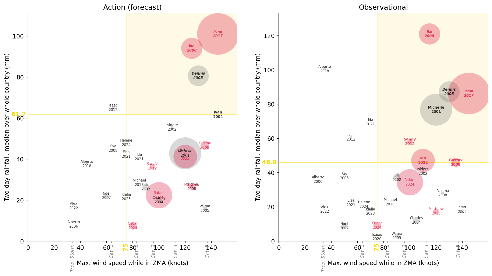
disp_selected_threshs(321844)| Action | Obsv. | CERF | Total Affected | |
|---|---|---|---|---|
| Storm | ||||
| Irma 2017 | Trig. | Trig. | Yes | 10,000,000 |
| Michelle 2001 | No trig. | Trig. | pre- | 5,900,012 |
| Rafael 2024 | No trig. | No trig. | Yes | 4,000,000 |
| Ian 2022 | No trig. | Trig. | Yes | 3,200,000 |
| Ike 2008 | Trig. | Trig. | Yes | 2,600,000 |
| Dennis 2005 | Trig. | Trig. | pre- | 2,500,000 |
| Gustav 2008 | No trig. | Trig. | Yes | 450,019 |
| Oscar 2024 | No trig. | No trig. | Yes | 320,000 |
| Lili 2002 | No trig. | No trig. | pre- | 281,470 |
| Charley 2004 | No trig. | No trig. | pre- | 244,005 |
| Noel 2007 | No trig. | No trig. | No | 192,488 |
| Matthew 2016 | No trig. | No trig. | Yes | 190,000 |
| Sandy 2012 | No trig. | Trig. | Yes | 162,605 |
| Wilma 2005 | No trig. | No trig. | pre- | 100,000 |
| Paloma 2008 | No trig. | No trig. | No | 49,445 |
| Isaac 2012 | No trig. | No trig. | No | 45,496 |
| Isidore 2002 | No trig. | No trig. | pre- | 42,500 |
| Alberto 2018 | No trig. | No trig. | No | 40,000 |
| Alex 2022 | No trig. | No trig. | No | 6,780 |
| Ivan 2004 | Trig. | No trig. | pre- | 3,245 |
| Michael 2018 | No trig. | No trig. | No | 540 |
| Isaias 2020 | No trig. | No trig. | No | 500 |
| Alberto 2006 | No trig. | No trig. | No | 268 |
| Ida 2021 | No trig. | No trig. | No | 0 |
| Elsa 2021 | No trig. | No trig. | No | 0 |
| Idalia 2023 | No trig. | No trig. | No | 0 |
| Helene 2024 | No trig. | No trig. | No | 0 |
| Dean 2007 | No trig. | No trig. | No | 0 |
| Fay 2008 | No trig. | No trig. | No | 0 |
df_metrics_lowest| Total Affected | Total Deaths | Total Damage, Adjusted ('000 US$) | Amount in US$ | cerf | fcast_wind | fcast_rain_col | fcast_rain_thresh | obsv_wind | obsv_rain_col | obsv_rain_thresh | n_years_fcast | n_years_obsv | n_years_diff | n_years_diff_abs | n_years_total | |
|---|---|---|---|---|---|---|---|---|---|---|---|---|---|---|---|---|
| 332720 | 24745221.0 | 41.0 | 8135595.0 | 23194719.0 | 4.0 | 80.0 | q50 | 41.205720 | 125.0 | q50_obsv | 2.44 | 7 | 4 | 3 | 3 | 11 |
| 198088 | 16341819.0 | 52.0 | 13714030.0 | 26242474.0 | 5.0 | 35.0 | q95 | 141.738710 | 125.0 | q50_obsv | 2.44 | 7 | 4 | 3 | 3 | 11 |
| 22746 | 24843276.0 | 41.0 | 11268506.0 | 28547455.0 | 5.0 | 120.0 | q80 | 70.166730 | 130.0 | q50_obsv | 2.44 | 7 | 4 | 3 | 3 | 11 |
| 82763 | 21735221.0 | 38.0 | 11280927.0 | 20719721.0 | 4.0 | 110.0 | q80 | 78.203220 | 115.0 | q50_obsv | 2.44 | 7 | 6 | 1 | 1 | 13 |
| 314406 | 21495776.0 | 38.0 | 8110595.0 | 15366985.0 | 3.0 | 75.0 | q50 | 42.807594 | 130.0 | q50_obsv | 2.44 | 7 | 4 | 3 | 3 | 11 |
| ... | ... | ... | ... | ... | ... | ... | ... | ... | ... | ... | ... | ... | ... | ... | ... | ... |
| 25202 | 24992721.0 | 45.0 | 12317493.0 | 28547455.0 | 5.0 | 120.0 | mean | 21.936502 | 30.0 | q80_obsv | NaN | 7 | 0 | 7 | 7 | 7 |
| 25203 | 24992721.0 | 45.0 | 12317493.0 | 28547455.0 | 5.0 | 120.0 | mean | 21.936502 | 30.0 | q95_obsv | NaN | 7 | 0 | 7 | 7 | 7 |
| 100940 | 16292374.0 | 52.0 | 13714030.0 | 26242474.0 | 5.0 | 90.0 | q95 | 140.547760 | 30.0 | mean_obsv | NaN | 7 | 0 | 7 | 7 | 7 |
| 100943 | 16292374.0 | 52.0 | 13714030.0 | 26242474.0 | 5.0 | 90.0 | q95 | 140.547760 | 30.0 | q80_obsv | NaN | 7 | 0 | 7 | 7 | 7 |
| 328878 | 24695776.0 | 41.0 | 8135595.0 | 23194719.0 | 4.0 | 80.0 | q50 | 41.205720 | 30.0 | q80_obsv | NaN | 7 | 0 | 7 | 7 | 7 |
2543 rows × 16 columns
Combinations that meet all of:
q50 and q80for stage in ["fcast", "obsv"]:
df_metrics_lowest[f"{stage}_cat"] = df_metrics_lowest[
f"{stage}_wind"
].apply(knots2cat)
df_metrics_lowest["cat_diff"] = (
df_metrics_lowest["fcast_cat"] - df_metrics_lowest["obsv_cat"]
)
df_metrics_lowest["min_cat"] = df_metrics_lowest[
["fcast_cat", "obsv_cat"]
].min(axis=1)df_metrics_reasonable = df_metrics_lowest[
(df_metrics_lowest["cat_diff"].isin([0, 1]))
& (df_metrics_lowest["min_cat"] >= 1)
& (
df_metrics_lowest["fcast_rain_col"]
== df_metrics_lowest["obsv_rain_col"].str.removesuffix("_obsv")
)
& (df_metrics_lowest["fcast_rain_col"].isin(["q50", "q80"]))
].copy()len(df_metrics_reasonable)59fig, ax = plot_thresh_scatter(
df=df_metrics_reasonable,
zero_intercept=True,
# color="n_years_diff",
# zorder_rev=False,
)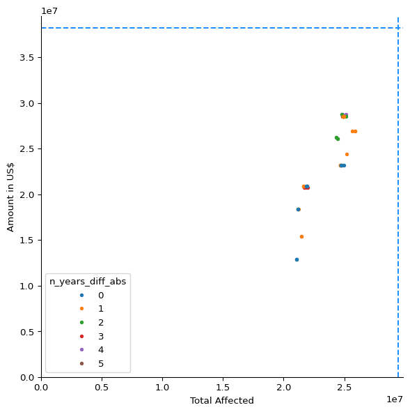
fig, ax = plot_thresh_scatter(
df=df_metrics_reasonable,
zero_intercept=True,
# color="n_years_diff",
# zorder_rev=False,
)
ax.axhline(2.8e7)
ax.axvline(2.55e7)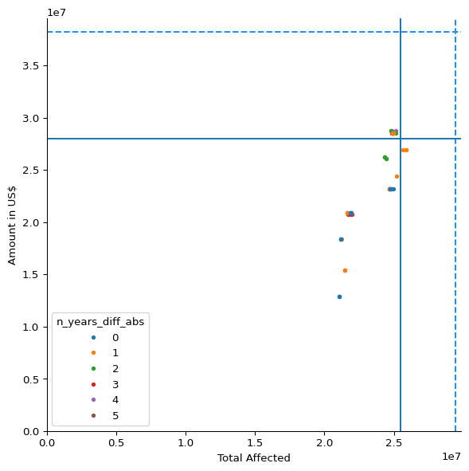
df_metrics_reasonable_bestcerf = df_metrics_reasonable[
df_metrics_reasonable["Amount in US$"] >= 2.8e7
]df_metrics_reasonable_bestcerf[
df_metrics_reasonable_bestcerf["n_years_diff"] == 1
]| Total Affected | Total Deaths | Total Damage, Adjusted ('000 US$) | Amount in US$ | cerf | fcast_wind | fcast_rain_col | fcast_rain_thresh | obsv_wind | obsv_rain_col | obsv_rain_thresh | n_years_fcast | n_years_obsv | n_years_diff | n_years_diff_abs | n_years_total | fcast_cat | obsv_cat | cat_diff | min_cat | |
|---|---|---|---|---|---|---|---|---|---|---|---|---|---|---|---|---|---|---|---|---|
| 40495 | 24992721.0 | 45.0 | 12317493.0 | 28547455.0 | 5.0 | 120.0 | q50 | 7.418959 | 115.0 | q50_obsv | 2.440000 | 7 | 6 | 1 | 1 | 13 | 4 | 4 | 0 | 4 |
| 40206 | 24892721.0 | 41.0 | 11268506.0 | 28547455.0 | 5.0 | 120.0 | q50 | 17.138527 | 115.0 | q50_obsv | 2.440000 | 7 | 6 | 1 | 1 | 13 | 4 | 4 | 0 | 4 |
| 42148 | 24892721.0 | 41.0 | 11268506.0 | 28547455.0 | 5.0 | 120.0 | q80 | 38.042336 | 115.0 | q80_obsv | 12.709001 | 7 | 6 | 1 | 1 | 13 | 4 | 4 | 0 | 4 |
| 40872 | 24992721.0 | 45.0 | 12317493.0 | 28547455.0 | 5.0 | 120.0 | q80 | 35.698547 | 115.0 | q80_obsv | 12.709001 | 7 | 6 | 1 | 1 | 13 | 4 | 4 | 0 | 4 |
| 13724 | 24892721.0 | 41.0 | 11268506.0 | 28547455.0 | 5.0 | 120.0 | q80 | 38.042336 | 105.0 | q80_obsv | 96.217003 | 7 | 6 | 1 | 1 | 13 | 4 | 3 | 1 | 3 |
| 13136 | 24992721.0 | 45.0 | 12317493.0 | 28547455.0 | 5.0 | 120.0 | q80 | 35.698547 | 105.0 | q80_obsv | 96.217003 | 7 | 6 | 1 | 1 | 13 | 4 | 3 | 1 | 3 |
Among the reasonable combinations: at least USD 28 million of CERF allocations, closest to balanced (n_years_diff == 1), and the lowest observational wind threshold.
plot_selected_threshs(13136);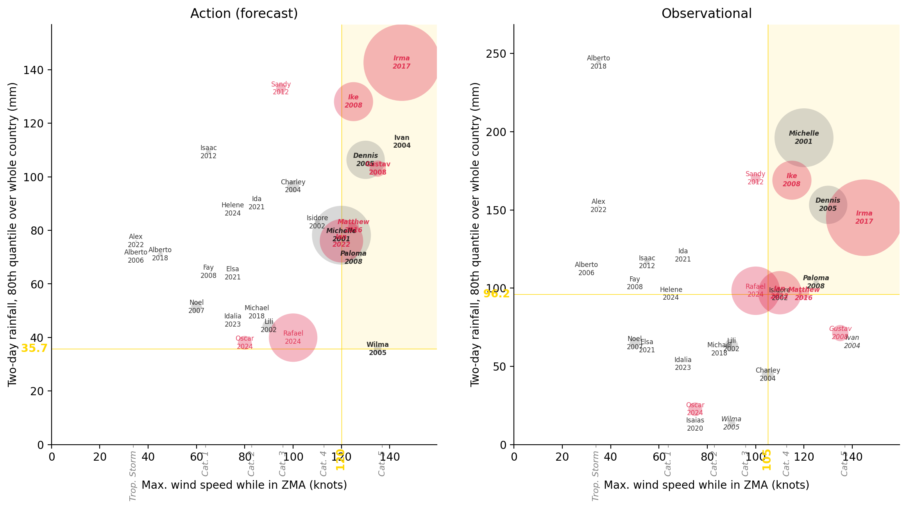
disp_selected_threshs(13136)| Action | Obsv. | CERF | Total Affected | |
|---|---|---|---|---|
| Storm | ||||
| Irma 2017 | Trig. | Trig. | Yes | 10,000,000 |
| Michelle 2001 | Trig. | Trig. | pre- | 5,900,012 |
| Rafael 2024 | No trig. | No trig. | Yes | 4,000,000 |
| Ian 2022 | Trig. | Trig. | Yes | 3,200,000 |
| Ike 2008 | Trig. | Trig. | Yes | 2,600,000 |
| Dennis 2005 | Trig. | Trig. | pre- | 2,500,000 |
| Gustav 2008 | Trig. | No trig. | Yes | 450,019 |
| Oscar 2024 | No trig. | No trig. | Yes | 320,000 |
| Lili 2002 | No trig. | No trig. | pre- | 281,470 |
| Charley 2004 | No trig. | No trig. | pre- | 244,005 |
| Noel 2007 | No trig. | No trig. | No | 192,488 |
| Matthew 2016 | Trig. | Trig. | Yes | 190,000 |
| Sandy 2012 | No trig. | No trig. | Yes | 162,605 |
| Wilma 2005 | Trig. | No trig. | pre- | 100,000 |
| Paloma 2008 | Trig. | Trig. | No | 49,445 |
| Isaac 2012 | No trig. | No trig. | No | 45,496 |
| Isidore 2002 | No trig. | No trig. | pre- | 42,500 |
| Alberto 2018 | No trig. | No trig. | No | 40,000 |
| Alex 2022 | No trig. | No trig. | No | 6,780 |
| Ivan 2004 | Trig. | No trig. | pre- | 3,245 |
| Michael 2018 | No trig. | No trig. | No | 540 |
| Isaias 2020 | No trig. | No trig. | No | 500 |
| Alberto 2006 | No trig. | No trig. | No | 268 |
| Ida 2021 | No trig. | No trig. | No | 0 |
| Elsa 2021 | No trig. | No trig. | No | 0 |
| Idalia 2023 | No trig. | No trig. | No | 0 |
| Helene 2024 | No trig. | No trig. | No | 0 |
| Dean 2007 | No trig. | No trig. | No | 0 |
| Fay 2008 | No trig. | No trig. | No | 0 |
Maximising people affected among the reasonable combinations gives option 4 again.
df_metrics_reasonable_bestimpact = df_metrics_reasonable[
df_metrics_reasonable["Total Affected"] >= 2.55e7
]df_metrics_reasonable_bestimpact| Total Affected | Total Deaths | Total Damage, Adjusted ('000 US$) | Amount in US$ | cerf | fcast_wind | fcast_rain_col | fcast_rain_thresh | obsv_wind | obsv_rain_col | obsv_rain_thresh | n_years_fcast | n_years_obsv | n_years_diff | n_years_diff_abs | n_years_total | fcast_cat | obsv_cat | cat_diff | min_cat | |
|---|---|---|---|---|---|---|---|---|---|---|---|---|---|---|---|---|---|---|---|---|
| 111447 | 25909331.0 | 53.0 | 9622569.0 | 26889626.0 | 5.0 | 90.0 | q80 | 87.754250 | 75.0 | q80_obsv | 98.341003 | 5 | 6 | -1 | 1 | 11 | 2 | 1 | 1 | 1 |
| 322018 | 25665326.0 | 49.0 | 8073174.0 | 26889626.0 | 5.0 | 75.0 | q80 | 103.080360 | 75.0 | q80_obsv | 98.341003 | 5 | 6 | -1 | 1 | 11 | 1 | 1 | 0 | 1 |
| 321972 | 25909331.0 | 53.0 | 9622569.0 | 26889626.0 | 5.0 | 75.0 | q80 | 96.462585 | 75.0 | q80_obsv | 98.341003 | 5 | 6 | -1 | 1 | 11 | 1 | 1 | 0 | 1 |
plot_selected_threshs(321972);
disp_selected_threshs(321972)| Action | Obsv. | CERF | Total Affected | |
|---|---|---|---|---|
| Storm | ||||
| Irma 2017 | Trig. | Trig. | Yes | 10,000,000 |
| Michelle 2001 | No trig. | Trig. | pre- | 5,900,012 |
| Rafael 2024 | No trig. | Trig. | Yes | 4,000,000 |
| Ian 2022 | No trig. | No trig. | Yes | 3,200,000 |
| Ike 2008 | Trig. | Trig. | Yes | 2,600,000 |
| Dennis 2005 | Trig. | Trig. | pre- | 2,500,000 |
| Gustav 2008 | Trig. | No trig. | Yes | 450,019 |
| Oscar 2024 | No trig. | No trig. | Yes | 320,000 |
| Lili 2002 | No trig. | No trig. | pre- | 281,470 |
| Charley 2004 | Trig. | No trig. | pre- | 244,005 |
| Noel 2007 | No trig. | No trig. | No | 192,488 |
| Matthew 2016 | No trig. | No trig. | Yes | 190,000 |
| Sandy 2012 | Trig. | Trig. | Yes | 162,605 |
| Wilma 2005 | No trig. | No trig. | pre- | 100,000 |
| Paloma 2008 | No trig. | Trig. | No | 49,445 |
| Isaac 2012 | No trig. | No trig. | No | 45,496 |
| Isidore 2002 | No trig. | No trig. | pre- | 42,500 |
| Alberto 2018 | No trig. | No trig. | No | 40,000 |
| Alex 2022 | No trig. | No trig. | No | 6,780 |
| Ivan 2004 | Trig. | No trig. | pre- | 3,245 |
| Michael 2018 | No trig. | No trig. | No | 540 |
| Isaias 2020 | No trig. | No trig. | No | 500 |
| Alberto 2006 | No trig. | No trig. | No | 268 |
| Ida 2021 | No trig. | No trig. | No | 0 |
| Elsa 2021 | No trig. | No trig. | No | 0 |
| Idalia 2023 | No trig. | No trig. | No | 0 |
| Helene 2024 | No trig. | No trig. | No | 0 |
| Dean 2007 | No trig. | No trig. | No | 0 |
| Fay 2008 | No trig. | No trig. | No | 0 |
The working group chose option 1b in July 2025. Below it is evaluated again with a readiness stage added, which uses the action wind threshold.
blob_name = f"{PROJECT_PREFIX}/processed/nhc/monitors_nhc_chirpsgefs.parquet"
df_monitors_fcast = stratus.load_parquet_from_blob(blob_name)
df_stats_fcast_readiness = (
df_monitors_fcast[df_monitors_fcast["lt_name"] == "readiness"]
.groupby("atcf_id")
.max()
.reset_index()
.dropna()
.drop(columns=["issue_time", "lt_name"])
)
blob_name = f"{PROJECT_PREFIX}/processed/impact/emdat_cerf_upto2024.parquet"
df_impact = stratus.load_parquet_from_blob(blob_name)
df_storms = ibtracs.load_storms()
cols = ["sid", "atcf_id"]
df_storm_lookup = df_storms[cols].copy()
df_storm_lookup["atcf_id"] = df_storm_lookup["atcf_id"].str.lower()
df_stats_fcast_readiness_labelled = df_stats_fcast_readiness.merge(
df_storm_lookup
)
df_stats_fcast_readiness_labelled["Readiness"] = (
df_stats_fcast_readiness_labelled.apply(
lambda row: (
"Trig."
if (
# use actual readiness trigger (same as action)
row["wind"]
>= THRESHS["readiness"]["s"]
)
else "No trig."
),
axis=1,
)
)# Function to get trigger results with readiness analysis
def get_action_obsv_trig_results(index, impact_col="Total Affected"):
"""
Returns a dataframe with trigger results including readiness column
"""
df_disp = get_triggered_storms(index).copy()
df_disp["CERF"] = df_disp.apply(set_cerf_str, axis=1)
df_disp["Storm"] = (
df_disp["name"].str.capitalize() + " " + df_disp["year"].astype(str)
)
df_disp["Action"] = df_disp["fcast_trig"].apply(
lambda x: "Trig." if x else "No trig."
)
df_disp["Obsv."] = df_disp["obsv_trig"].apply(
lambda x: "Trig." if x else "No trig."
)
cols = ["sid","Storm", "Action", "Obsv.", "CERF", impact_col]
return df_disp[cols].sort_values(impact_col, ascending=False)
df_metrics
# Get results for option 1b (index 13136 from earlier analysis)
df_1b_with_readiness = get_action_obsv_trig_results(13136).merge(df_stats_fcast_readiness_labelled)# Optional: Create a styled display of the results
def display_styled_results(df_results, impact_col="Total Affected"):
"""
Display the results with styling if needed
"""
def color_df_extended(val):
if val == "Yes":
return "background-color: crimson"
elif val == "No":
return "background-color: dodgerblue"
elif val == "Trig.":
return "background-color: darkorange"
else:
return ""
cols_for_display = ["Readiness","Action", "Obsv.", "CERF", impact_col]
return (
df_results.set_index("Storm")[cols_for_display]
.style.bar(
subset=impact_col,
color="mediumpurple",
props="width: 150px;",
)
.map(color_df_extended)
.set_table_styles(
{
impact_col: [
{"selector": "th", "props": [("text-align", "left")]},
{"selector": "td", "props": [("text-align", "left")]},
]
}
)
.format({"Total Affected": "{:,}"})
)
# Display styled version if desired
display_styled_results(df_1b_with_readiness)| Readiness | Action | Obsv. | CERF | Total Affected | |
|---|---|---|---|---|---|
| Storm | |||||
| Irma 2017 | Trig. | Trig. | Trig. | Yes | 10,000,000 |
| Michelle 2001 | Trig. | Trig. | Trig. | pre- | 5,900,012 |
| Rafael 2024 | No trig. | No trig. | No trig. | Yes | 4,000,000 |
| Ian 2022 | Trig. | Trig. | Trig. | Yes | 3,200,000 |
| Ike 2008 | Trig. | Trig. | Trig. | Yes | 2,600,000 |
| Dennis 2005 | Trig. | Trig. | Trig. | pre- | 2,500,000 |
| Gustav 2008 | Trig. | Trig. | No trig. | Yes | 450,019 |
| Oscar 2024 | No trig. | No trig. | No trig. | Yes | 320,000 |
| Lili 2002 | No trig. | No trig. | No trig. | pre- | 281,470 |
| Charley 2004 | No trig. | No trig. | No trig. | pre- | 244,005 |
| Noel 2007 | No trig. | No trig. | No trig. | No | 192,488 |
| Matthew 2016 | Trig. | Trig. | Trig. | Yes | 190,000 |
| Sandy 2012 | No trig. | No trig. | No trig. | Yes | 162,605 |
| Wilma 2005 | Trig. | Trig. | No trig. | pre- | 100,000 |
| Paloma 2008 | Trig. | Trig. | Trig. | No | 49,445 |
| Isaac 2012 | No trig. | No trig. | No trig. | No | 45,496 |
| Isidore 2002 | No trig. | No trig. | No trig. | pre- | 42,500 |
| Alberto 2018 | No trig. | No trig. | No trig. | No | 40,000 |
| Alex 2022 | No trig. | No trig. | No trig. | No | 6,780 |
| Ivan 2004 | Trig. | Trig. | No trig. | pre- | 3,245 |
| Michael 2018 | No trig. | No trig. | No trig. | No | 540 |
| Alberto 2006 | No trig. | No trig. | No trig. | No | 268 |
| Ida 2021 | No trig. | No trig. | No trig. | No | 0 |
| Elsa 2021 | No trig. | No trig. | No trig. | No | 0 |
| Idalia 2023 | No trig. | No trig. | No trig. | No | 0 |
| Helene 2024 | No trig. | No trig. | No trig. | No | 0 |
| Fay 2008 | No trig. | No trig. | No trig. | No | 0 |
def calculate_joint_return_period(df_results):
"""
Calculate the return period when any of the three triggers (Action, Obsv., Readiness) fires
"""
# Create boolean columns for each trigger type
df_calc = df_results.copy()
df_calc["action_bool"] = df_calc["Action"] == "Trig."
df_calc["obsv_bool"] = df_calc["Obsv."] == "Trig."
df_calc["readiness_bool"] = df_calc["Readiness"] == "Trig."
# Create combined trigger: TRUE if ANY of the three triggers fire
df_calc["any_trig"] = (
df_calc["action_bool"]
| df_calc["obsv_bool"]
| df_calc["readiness_bool"]
)
# Extract year from Storm column (assuming format "Name YYYY")
df_calc["year"] = df_calc["Storm"].str.extract(r"(\d{4})").astype(int)
# Get distinct years where any trigger fired
triggered_years = df_calc[df_calc["any_trig"]]["year"].unique()
n_triggered_years = len(triggered_years)
# Calculate return period using Weibull formula
# Total period: 2000-2024 = 25 years
total_years = 25
return_period = (total_years + 1) / n_triggered_years
# print(f"Triggered years: {sorted(triggered_years)}")
print(f"Number of triggered years: {n_triggered_years}")
print(f"Total analysis period: {total_years} years (2000-2024)")
print(f"Joint return period: {return_period:.2f} years")
return {
# "triggered_years": triggered_years,
"n_triggered_years": n_triggered_years,
"return_period": return_period,
"df_with_any_trig": df_calc,
}
# Calculate joint return period for Option 1b
joint_rp_results = calculate_joint_return_period(df_1b_with_readiness)Number of triggered years: 7
Total analysis period: 25 years (2000-2024)
Joint return period: 3.71 years# Show detailed breakdown by trigger type
def analyze_trigger_breakdown(joint_results):
"""
Analyze which storms are triggered by which combination of triggers
"""
df_analysis = joint_results["df_with_any_trig"]
# Create trigger combination categories - use a more systematic approach
df_analysis["trigger_combo"] = "No trigger" # Default value
# First handle all triggered cases (any_trig == True)
triggered_mask = df_analysis["any_trig"]
# Use nested conditions to ensure mutually exclusive categories
df_analysis.loc[
triggered_mask
& df_analysis["action_bool"]
& df_analysis["obsv_bool"]
& df_analysis["readiness_bool"],
"trigger_combo",
] = "All three"
df_analysis.loc[
triggered_mask
& df_analysis["action_bool"]
& df_analysis["obsv_bool"]
& ~df_analysis["readiness_bool"],
"trigger_combo",
] = "Action + Obsv"
df_analysis.loc[
triggered_mask
& df_analysis["action_bool"]
& ~df_analysis["obsv_bool"]
& df_analysis["readiness_bool"],
"trigger_combo",
] = "Action + Readiness"
df_analysis.loc[
triggered_mask
& ~df_analysis["action_bool"]
& df_analysis["obsv_bool"]
& df_analysis["readiness_bool"],
"trigger_combo",
] = "Obsv + Readiness"
df_analysis.loc[
triggered_mask
& df_analysis["action_bool"]
& ~df_analysis["obsv_bool"]
& ~df_analysis["readiness_bool"],
"trigger_combo",
] = "Action only"
df_analysis.loc[
triggered_mask
& ~df_analysis["action_bool"]
& df_analysis["obsv_bool"]
& ~df_analysis["readiness_bool"],
"trigger_combo",
] = "Obsv only"
df_analysis.loc[
triggered_mask
& ~df_analysis["action_bool"]
& ~df_analysis["obsv_bool"]
& df_analysis["readiness_bool"],
"trigger_combo",
] = "Readiness only"
# Aggregate to year level to see which years had which trigger combinations
year_summary = (
df_analysis.groupby("year")
.agg(
{
"action_bool": "any", # True if ANY storm in that year triggered Action
"obsv_bool": "any", # True if ANY storm in that year triggered Obsv
"readiness_bool": "any", # True if ANY storm in that year triggered Readiness
"any_trig": "any", # True if ANY storm in that year triggered anything
"Total Affected": "sum", # Sum total affected for the year
}
)
.reset_index()
)
# Create year-level trigger combination categories
year_summary["year_trigger_combo"] = "No trigger"
triggered_years_mask = year_summary["any_trig"]
year_summary.loc[
triggered_years_mask
& year_summary["action_bool"]
& year_summary["obsv_bool"]
& year_summary["readiness_bool"],
"year_trigger_combo",
] = "All three"
year_summary.loc[
triggered_years_mask
& year_summary["action_bool"]
& year_summary["obsv_bool"]
& ~year_summary["readiness_bool"],
"year_trigger_combo",
] = "Action + Obsv"
year_summary.loc[
triggered_years_mask
& year_summary["action_bool"]
& ~year_summary["obsv_bool"]
& year_summary["readiness_bool"],
"year_trigger_combo",
] = "Action + Readiness"
year_summary.loc[
triggered_years_mask
& ~year_summary["action_bool"]
& year_summary["obsv_bool"]
& year_summary["readiness_bool"],
"year_trigger_combo",
] = "Obsv + Readiness"
year_summary.loc[
triggered_years_mask
& year_summary["action_bool"]
& ~year_summary["obsv_bool"]
& ~year_summary["readiness_bool"],
"year_trigger_combo",
] = "Action only"
year_summary.loc[
triggered_years_mask
& ~year_summary["action_bool"]
& year_summary["obsv_bool"]
& ~year_summary["readiness_bool"],
"year_trigger_combo",
] = "Obsv only"
year_summary.loc[
triggered_years_mask
& ~year_summary["action_bool"]
& ~year_summary["obsv_bool"]
& year_summary["readiness_bool"],
"year_trigger_combo",
] = "Readiness only"
# Show year-level breakdown
year_trigger_summary = (
year_summary.groupby("year_trigger_combo")
.agg({"year": lambda x: sorted(x.tolist()), "Total Affected": "sum"})
.round(0)
)
year_trigger_summary.columns = ["Years", "Total Affected"]
year_trigger_summary["Number of Years"] = year_trigger_summary[
"Years"
].apply(len)
print("\nYear-Level Trigger Combination Breakdown:")
print("=" * 50)
for combo, row in year_trigger_summary.iterrows():
print(
f"{combo}: {row['Number of Years']} years, {row['Total Affected']:,.0f} total affected"
)
if len(row["Years"]) > 0:
print(f" Years: {row['Years']}")
return year_trigger_summary
# Analyze the trigger breakdown
trigger_breakdown = analyze_trigger_breakdown(joint_rp_results)
trigger_breakdown
Year-Level Trigger Combination Breakdown:
==================================================
Action + Readiness: 1 years, 247,250 total affected
Years: [2004]
All three: 6 years, 24,996,256 total affected
Years: [2001, 2005, 2008, 2016, 2017, 2022]
No trigger: 8 years, 5,085,367 total affected
Years: [2002, 2006, 2007, 2012, 2018, 2021, 2023, 2024]| Years | Total Affected | Number of Years | |
|---|---|---|---|
| year_trigger_combo | |||
| Action + Readiness | [2004] | 247250 | 1 |
| All three | [2001, 2005, 2008, 2016, 2017, 2022] | 24996256 | 6 |
| No trigger | [2002, 2006, 2007, 2012, 2018, 2021, 2023, 2024] | 5085367 | 8 |
# It seems something was wrong w/ dev db connection for ibtracs 2025-11-20 when I was running this so I had to do a hack to get # this notebook to run and get the `joint_rp_results` object I wanted loaded
# As df_storms = ibtrac.load_storms() (ln 941) was not working - i did this instead to recreated it (and then proceeded):
# cols = ["sid", "atcf_id"]
# df_storm_lookup = df_stats[cols].drop_duplicates().copy()
# df_storm_lookup["atcf_id"] = df_storm_lookup["atcf_id"].str.lower()
df_joint_rp_results = joint_rp_results["df_with_any_trig"]
df_trigger_bools = df_joint_rp_results[
["year", "readiness_bool", "action_bool", "obsv_bool"]
]
# Collapse to unique years - any TRUE in a year becomes TRUE for that year
df_trigger_bools_by_year = (
df_trigger_bools.groupby("year")
.agg({"readiness_bool": "any", "action_bool": "any", "obsv_bool": "any"})
.reset_index()
)
# Fill in all missing years from 2000-2024 with False
all_years = pd.DataFrame({"year": range(2000, 2026)})
df_trigger_bools_by_year = all_years.merge(
df_trigger_bools_by_year, on="year", how="left"
).fillna(False)
# Set all triggers to True for 2025
df_trigger_bools_by_year.loc[
df_trigger_bools_by_year["year"] == 2025,
["readiness_bool", "action_bool", "obsv_bool"],
] = True# write for financial risk transfer solution project
df_trigger_bools_by_year_uid = df_trigger_bools_by_year.rename(
columns={
"readiness_bool": "cub_storms_v1_wt1",
"action_bool": "cub_storms_v1_wt2",
"obsv_bool": "cub_storms_v1_wt3",
}
)
df_trigger_bools_by_year_uid
stratus.upload_csv_to_blob(
df_trigger_bools_by_year_uid,
"ds-aa-cerf-global-trigger-allocations/aa_historical/yearly/v4/cub_storms_v1.csv",
)